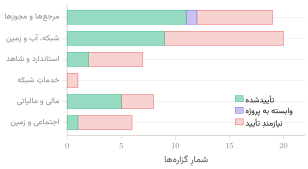
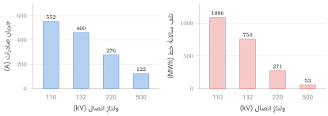
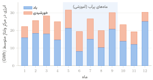
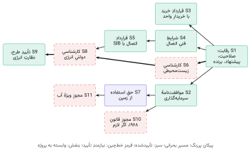
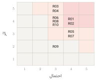
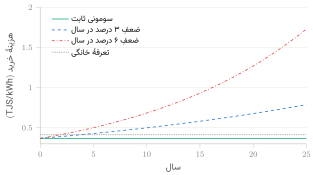

57 پروندهٔ مقررات و استانداردهای تاجیکستان
57.1 نقشهٔ فصل
این فصل حاصلِ پژوهش بر منابعِ رسمی و ثانوی در تاریخِ 2026-11-17 است. در آن روز دو درگاهِ ملیِ متنِ قانونها در دسترس نبودند. پس متنِ قانونها از مخزنهای بینالمللیِ متنِ رسمی خوانده شد و اینکه آخرین متنِ تلفیقیاند یا نه، وارسیِ تاریخدار میخواهد. هیچ گزارهای از این فصل بی بازبینیِ مهندسان و کارشناسانِ حقوقی و مقرراتیِ آشنا با رویهٔ جاریِ تاجیکستان و بی وارسیِ دوباره در منبع برای پروژه به کار نمیرود. این فصل مشاورهٔ حقوقی، مالیاتی یا مالی نیست.
پس از این فصل، خواننده میتواند:
- مرجعها، شرکتهای برق و راهِ تأییدِ یک نیروگاهِ تجدیدپذیرِ بزرگ را در تاجیکستان از منبع نام ببرد و نقشِ هر کدام را با وضعیتش بگوید.
- الزامهای اتصال، کنتور و اسکادای قاعدههای ۲۰۲۶ را به طراحیِ نیروگاه ردیابی کند و آنچه را عدد ندارد جدا کند.
- دادههایی را که مطالعههای شبکه میخواهند فهرست کند، از جمله الگوی فصلیِ شبکهای که بیشترش برقِ آبی است.
- دو خوانشِ ناسازگار از یک منبع (قاعدهها و نمونهقرارداد) را پیدا کند، اثرِ هر کدام را حساب کند و پرسشِ کتبیاش را بنویسد.
- منابعِ مالی، زمین و جامعه را فقط با شاهدِ معتبر وارد پرونده کند و هر نامعلوم را برچسب بزند.
پیشنیاز: روشِ شناساییِ الزامها (فصل 54)، پروندهٔ ایران (فصل 55) که موتورِ برنامه را ساخت، و پروندهٔ افغانستان (فصل 56).
- اگر قاعدهای میگوید کاهشِ تولید نقضِ قرارداد نیست، ولی نمونهقراردادِ پیوستِ همان قاعده سودِ ازدسترفته را میپردازد، گزاره چه برچسبی میگیرد و چه میخواهد؟
- چرا در شبکهای که بیشترِ برقش آبی است، تابستان و زمستان برای نیروگاهِ بادی–خورشیدی فرق دارند؟
- اگر متنِ قانونی را از مخزنِ بینالمللی خوانده باشید و درگاهِ ملی در دسترس نباشد، چه چیزی هنوز وارسی میخواهد؟
پاسخها: (۱) متن تأییدشده است، ولی کدام حاکم است یک تفسیر است که پرسشِ کتبی میخواهد؛ (۲) در تابستان آب فراوان است و ممکن است تولید کاهش یابد، و در زمستان کمبود هست؛ (۳) اینکه آخرین متنِ تلفیقی است. اگر دو پرسش یا بیشتر را نتوانستید، بخش 54.4.4 و بخش 55.1.1 را مرور کنید.
جایگاهِ این فصل در نیروگاهِ P. فرض این است که نیروگاهِ P در تاجیکستان ساخته شود (P–تاجیکستان)، در ساختگاهی آموزشی در استانِ سغد. دادههای فنی همان دادههای کتاباند. مرجعها، قاعدهها و سندهای مناقصه از پژوهشِ 2026-11-17 میآیند و یادداشتِ کاملِ پژوهش در پوشهٔ پژوهشِ پروژه ثبت است. مدتها، ارزشهای ساختگاه، گزینههای تجهیز، فصلِ پرآب، قیمتِ خرید و امتیازهای ریسک آموزشیاند (A-562 تا A-566). نیروگاهِ P هیچکدام از طرحهای واقعیِ نامبرده در این فصل نیست. نتیجه مبنای D-061 است.
57.1.1 برچسبها در این پرونده
همان سه برچسبِ جدول 55.1 به کار میرود. قانونی که متنش از مخزنهای بینالمللیِ متنِ رسمی خوانده شد، تأییدشده است، با یادداشتِ «متنِ تلفیقیِ آخر وارسی شود». گزارهای که فقط از خبر، گزارشِ وامدهنده یا ترجمهٔ غیررسمی میآید، نیازمندِ تأیید است. قاعدههای دولت دربارهٔ ورودِ برقِ تجدیدپذیر به شبکه (مصوبهٔ ۴۴۹، 2026-07-01) و سندِ مناقصهٔ خورشیدیِ سغد (2024-08-21) را نویسنده جداگانه خوانده و بندهای بهکاررفته را وارسی کرده است. شناسهها TJ-01 تا TJ-61 است.
برنامه:
companion/ch57/run.py و companion/ch57/more.py
Tajikistan: 61 facts by topic and status (sources read 2026-11-17)
topic verified proj-dep to-confirm
A authorities and approvals 11 1 7
B grid, export, water, land 9 0 11
C standards and evidence 2 0 5
E grid services 0 0 1
F finance and fiscal 5 0 3
G social and land 1 0 5
all 28 1 32
of the to-confirm items, 21 rest only on secondary sources
(news, lenders' or law firms' summaries): a lead, not a source
مثال 57.1 (قاعدههای تازه، پیرامونِ نامعلوم) پرسش. از ۶۱ گزاره چند تا تأییدشدهاند و نامعلومها بیشتر کجایند؟
پاسخ. ۲۸ تأییدشده، ۱ وابسته به پروژه و ۳۲ نیازمندِ تأیید. ۲۱ گزارهٔ نیازمندِ تأیید فقط منبعِ ثانوی دارند. «شبکه، آب و زمین» ۱۱ گزارهٔ نیازمندِ تأیید دارد و «اجتماعی و زمین» ۵ از ۶ (شکل 57.1).
تفسیر. سهمِ تأییدشده (۴۶ درصد) میانِ ایران و افغانستان است. هستهٔ پرونده تازه و رسمی است: قاعدههای ۲۰۲۶ برای اتصال، کنتور و فروش، و سندِ مناقصهای که راهِ نیروگاههای بزرگ را نشان میدهد. پیرامونش نامعلوم است: چه کسی خریدارِ واحد و بهرهبردارِ سامانه است، کدام قاعدهٔ ارزیابیِ اثرات پس از قانونِ تازهٔ محیطِ زیست جاری است، و کدام کدِ شبکه، که هنوز تصویب نشده، الزامهای فنی را عددی میکند.
57.1.2 سابقهٔ جستوجو
research log: official sites, 2026-11-17
mewr.tj read (RFQ pdf, Resolution 449 docx)
barqitojik.tj read (structure, tariffs)
shib.tj read
standard.tj read
investcom.tj read
khf.tj read (warnings)
adlia.tj (legal portal) unreachable
mmk.tj (legal portal) unreachable
egov.tj listing only
environment committee no own site found
read 6, not read 4 of 10
with both legal portals down, laws were read in the FAOLEX and
UN-ESCAP repositories: the text is official, but whether it is
the latest consolidated version needs a dated checkمثال 57.2 (درگاهها بسته، متنها در مخزن) پرسش. از ده نشانیِ آزموده چند تا خوانده شد و قانونها از کجا خوانده شدند؟
پاسخ. شش نشانی خوانده شد: وزارتِ انرژی و منابعِ آب، شرکتِ برقِ تاجیک، شرکتِ شبکههای انتقال، تاجیکاستاندارد، کمیتهٔ سرمایهگذاری و کمیتهٔ وضعیتهای اضطراری. دو درگاهِ ملیِ قانون در دسترس نبودند. قانونها از مخزنهای بینالمللیِ متنِ رسمی خوانده شدند.
تفسیر. متنی که از مخزنِ بینالمللی میآید رسمی است، ولی شاید آخرین نسخه نباشد. پس هر قانون یک وارسیِ تاریخدار میگیرد: آیا پس از تاریخِ متن اصلاح شده است؟ پایشِ منبعها (بخش 57.10.1) درگاههای ملی را هر ماه دوباره میآزماید.
57.2 الف. مرجعها و راهِ تأیید
این بخش نهادهای مرتبط با یک نیروگاهِ بادی–خورشیدیِ بزرگ را با منبع و وضعیت میآورد، و راهِ تأییدی را که قاعدههای ۲۰۲۶ و سندِ مناقصهٔ سغد نشان میدهند.
57.2.1 نهادها
| شناسه | گزاره | وضعیت | منبع |
|---|---|---|---|
| TJ-01 | وزارتِ انرژی و منابعِ آب مناقصههای نیروگاههای خورشیدیِ خصوصی را برگزار میکند | تأییدشده | mewr.tj؛ سندِ مناقصهٔ سغد |
| TJ-02 | شرکتِ «برقِ تاجیک»: تولید، مدیریتِ بازار؛ خریدارِ قراردادِ مناقصهٔ سغد | تأییدشده | barqitojik.tj؛ سندِ مناقصه |
| TJ-03 | شرکتِ «شبکههای انتقالِ برق» (مصوبهٔ ۳۳۰، ۲۰۱۹)؛ در سندِ مناقصه بهرهبردارِ شبکهٔ انتقال | تأییدشده | shib.tj؛ سندِ مناقصه |
| TJ-04 | شرکتِ «شبکههای توزیعِ برق»: تعرفه و صورتحساب | تأییدشده | وبگاهِ شرکت |
| TJ-05 | بهرهبردارِ مستقلِ سامانه نیست؛ برنامهٔ ۲۰۲۶ تا ۲۰۳۰ آن را همراهِ خریدارِ واحد تا ۲۰۲۷ پیشبینی میکند | نیازمندِ تأیید (ثانوی) | خبر، دسامبرِ ۲۰۲۵ |
| TJ-06 | تعرفهها را دولت به پیشنهادِ نهادِ ضدانحصار تصویب میکند؛ تنظیمگرِ مستقلی پیدا نشد | تأییدشده | قانونِ انرژی شمارهٔ ۳۳، مادهٔ ۱۵ (متن از مخزنِ FAOLEX)؛ اصلاحیهٔ ۲۰۲۲ |
| TJ-07 | ادارهٔ نظارتِ دولتی بر انرژی طرحِ تأمینِ برقِ نیروگاههای تجدیدپذیرِ بالای 15 kW را تأیید میکند | تأییدشده | مصوبهٔ ۴۴۹، بندهای ۱۶، ۲۵ و ۴۵ |
| TJ-08 | تاجیکاستاندارد: استاندارد، اندازهشناسی، گواهیدهی | تأییدشده | standard.tj |
| TJ-09 | کمیتهٔ حفاظتِ محیطِ زیست: وبگاه و حدودِ اختیار | نیازمندِ تأیید (ثانوی) | فهرستِ درگاهِ دولت؛ وبگاهِ جداگانه پیدا نشد |
| TJ-10 | کمیتهٔ دولتیِ سرمایهگذاری موافقتنامهٔ سرمایهگذاری را امضا میکند | تأییدشده | investcom.tj؛ سندِ مناقصه |
مثال 57.3 (شرکتهای جدا، نقشهای هنوز ناتمام) پرسش. قراردادِ خرید، اتصال و اعزامِ تولیدِ P–تاجیکستان با کدام نهادهاست؟
پاسخ. در سندِ مناقصهٔ سغد، خریدار شرکتِ «برقِ تاجیک» است و قراردادِ اتصال با شرکتِ «شبکههای انتقال» بسته میشود (TJ-02، TJ-03). قاعدههای ۲۰۲۶ خریدِ برقِ نیروگاههای بزرگ را به «خریدارِ واحد» میسپارند (TJ-12)، ولی خریدارِ واحد هنوز تعیین نشده است (TJ-13). اینکه امروز چه کسی اعزامِ تولید را انجام میدهد هم معلوم نیست (TJ-05).
تفسیر. صنعتِ برق در حالِ تفکیک است: تولید، انتقال و توزیع شرکتهای جدا دارند و نقشِ بهرهبردارِ سامانه و خریدارِ واحد برای ۲۰۲۷ برنامهریزی شده است. پرونده طرفِ قرارداد را برای هر سند جدا ثبت میکند و پرسشِ «چه کسی تا ۲۰۲۷؟» را کتبی میپرسد (IN-06 در بخش 57.5.9). نقطهٔ پایانیِ اسکادا هم به همین پاسخ بستگی دارد (بخش 57.5.5).
57.2.2 راهِ تأییدِ نیروگاهِ بزرگ
| شناسه | گزاره | وضعیت | منبع |
|---|---|---|---|
| TJ-11 | آیا تولیدِ برق زیرِ قانونِ نظامِ مجوزها (شمارهٔ ۱۹۶۸، ۲۰۲۳) مجوز میخواهد و از چه نهادی | نیازمندِ تأیید | همان قانون (متن از مخزن)؛ فهرستِ مجوزها خوانده نشد |
| TJ-12 | بالای 1 MW: قیمت با فرایندِ رقابتی؛ قراردادِ خرید دستکم ۱۵ سال با خریدارِ واحد؛ شرکتهای شبکه موظف به اتصالاند | تأییدشده | مصوبهٔ ۴۴۹، بندهای ۷ و ۳۴ |
| TJ-13 | خریدارِ واحد هنوز تعیین نشده است | وابسته به پروژه | مصوبهٔ ۴۴۹ (نقش را تعریف میکند) |
| TJ-17 | پیش از تأییدِ طرح، نظرِ مثبتِ کارشناسیِ دولتیِ انرژی لازم است، از جمله برای منبعهای برق | تأییدشده | اصلاحیهٔ قانونِ صرفهجویی در انرژی، شمارهٔ ۱۹۱۱ (۲۰۲۲) |
| TJ-18 | کدام نهاد آن نظرِ کارشناسی را صادر میکند | نیازمندِ تأیید | اصلاحیه آن را نمیگوید |
| TJ-19 | قانونِ تازهٔ انرژی در ۲۰۲۵ سفارش داده شد؛ قانونِ تصویبشدهای پیدا نشد | نیازمندِ تأیید (ثانوی) | خبر، ژانویهٔ ۲۰۲۵ |
مثال 57.4 (رقابت، دو موافقتنامه، دو کارشناسی) پرسش. طرحِ P–تاجیکستان از چه راهی تأیید میگیرد؟
پاسخ. چون بالای 1 MW است، قیمتش از فرایندِ رقابتی میآید و قراردادِ خریدش دستکم ۱۵ سال با خریدارِ واحد است (TJ-12). سندِ مناقصهٔ سغد کنارِ آن موافقتنامهٔ سرمایهگذاری با دولت را میگذارد (TJ-10، TJ-14). پیش از تأییدِ طرح، دو کارشناسی لازم است: کارشناسیِ زیستمحیطی و کارشناسیِ دولتیِ انرژی (TJ-17، TJ-57). تأییدِ طرحِ تأمینِ برق با ادارهٔ نظارتِ دولتی بر انرژی است (TJ-07).
تفسیر. راه روشنتر از افغانستان است و منبعِ تازه دارد. دو گره دارد: صادرکنندهٔ نظرِ کارشناسیِ انرژی نامعلوم است (TJ-18)، و نامعلوم است که قانونِ نظامِ مجوزها برای تولید مجوز میخواهد یا نه (TJ-11). نقشهٔ تأییدها (بخش 57.5.1) هر دو را با برچسب نگه میدارد.
57.2.3 مناقصهها و طرحهای اعلامشده
| شناسه | گزاره | وضعیت | منبع |
|---|---|---|---|
| TJ-14 | مناقصهٔ خورشیدیِ ۲۰۰ مگاواتیِ سغد: قراردادِ ۲۵ساله با «برقِ تاجیک»، تعرفهٔ ثابت به دلار و پرداخت به سامانی، موافقتنامهٔ سرمایهگذاری با دولت، ساخت–مالکیت–بهرهبرداری (و انتقال)، واگذاریِ تأسیساتِ تخلیهٔ توان به شرکتِ انتقال در آغازِ بهرهبرداری، اجارهٔ زمین از «برقِ تاجیک» | تأییدشده | سندِ مناقصه، بخشِ ۲٫۴ (بازخوانیشده) |
| TJ-15 | برندهٔ مناقصهٔ سغد | نیازمندِ تأیید (ثانوی) | فهرستِ کوتاه در خبرها |
| TJ-16 | موافقتنامهٔ سرمایهگذاریِ ژانویهٔ ۲۰۲۶ برای دو نیروگاهِ خورشیدیِ ۲۵۰ مگاواتی | نیازمندِ تأیید (ثانوی) | خبرگزاری، ۱۳ ژانویهٔ ۲۰۲۶ |
مثال 57.5 (سندِ یک مناقصه، الگوی یک بازار) پرسش. سندِ مناقصهٔ سغد برای P–تاجیکستان چه چیزی را ثابت میکند و چه چیزی را نه؟
پاسخ. ثابت میکند که دولت برای یک نیروگاهِ بزرگ این ساختار را به کار برده است: قراردادِ ۲۵ساله، تعرفهٔ ثابت به دلار که به سامانی پرداخت میشود، موافقتنامهٔ سرمایهگذاری، و واگذاریِ تأسیساتِ تخلیهٔ توان به شرکتِ انتقال (TJ-14). ثابت نمیکند که همین شرطها به هر نیروگاهِ دیگری داده میشود. برنده و شرطهای نهاییِ همان مناقصه هم منتشر نشده است (TJ-15).
تفسیر. برای P، این ساختار وابسته به پروژه است (بخش 57.7). مدلِ مالی آن را حالتی میگیرد که باید با پیشنهادِ واقعی جایگزین شود. واگذاریِ تأسیساتِ تخلیهٔ توان یعنی خطِ اتصال پس از ساخت مالِ شرکتِ انتقال میشود. پس مرزِ مالکیت و نقطهٔ کنتور جابهجا میشوند و فهرستِ داراییها و قراردادِ نگهداری باید آن را نشان دهند (فصل 23، بخش 52.9).
- سه شرکتِ جدای صنعتِ برق کداماند و هر کدام چه میکند؟
- قاعدههای ۲۰۲۶ برای نیروگاهِ بالای 1 MW چه میگویند؟
- چرا خریدارِ واحد «وابسته به پروژه» است؟
- پیش از تأییدِ طرح کدام دو کارشناسی لازم است؟
- سندِ مناقصهٔ سغد چه چیزی را ثابت نمیکند؟
57.3 ب. شبکه، خروجی، آب، ساختگاه و توانِ محلی
این بخش دربارهٔ شبکه، الزامهای اتصال، آب، خطرهای ساختگاه و توانِ محلی آنچه را منبع دارد از آنچه ندارد جدا میکند. قاعدههای ۲۰۲۶ بخشِ بزرگی از الزامهای اتصال را مینویسند، ولی بیشترشان بی عدد.
57.3.1 ساختارِ شبکه
| شناسه | گزاره | وضعیت | منبع |
|---|---|---|---|
| TJ-20 | دو خطِ ۲۲۰ کیلوولت از محدودهٔ ساختگاهِ مناقصهٔ سغد میگذرند؛ پستِ خجند حدودِ ۱۸ کیلومتر دورتر است | تأییدشده | سندِ مناقصه (بازخوانیشده) |
| TJ-21 | انتقال در ۵۰۰، ۲۲۰ و ۱۱۰ کیلوولت؛ توزیع در ۳۵ کیلوولت و پایینتر | نیازمندِ تأیید (ثانوی) | گزارشِ کمکِ فنیِ بانکِ توسعهٔ آسیایی با پیشنویسِ کدِ شبکهٔ ۲۰۱۸ |
| TJ-22 | کدِ شبکهٔ تصویبشدهای پیدا نشد؛ کدِ ۲۰۱۸ پیشنویسِ مشاور است | نیازمندِ تأیید | همان گزارش (پیشنویس) |
| TJ-27 | حدودِ ۹۸ درصدِ انرژی آبی است؛ تولید در پاییز و زمستان کم میشود | نیازمندِ تأیید (ثانوی) | خبر و گزارشهای وامدهندگان |
| TJ-28 | ظرفیتِ نصبشده بیش از 6,700 MW؛ تولیدِ ۲۰۲۵ حدودِ 24 TWh | نیازمندِ تأیید (ثانوی) | خبرگزاری، 2026-11-12 |
| TJ-29 | جنوب–غرب از ژوئنِ ۲۰۲۴ دوباره به سامانهٔ برقِ آسیای مرکزی پیوست؛ شمال برای ۲۰۲۶ پیشبینی شد | نیازمندِ تأیید (ثانوی) | خبر |
| TJ-30 | طرحِ انتقالِ CASA-1000: صادراتِ تابستانیِ 1,300 MW؛ بخشِ افغانستان تا ۲۰۲۷ | نیازمندِ تأیید (ثانوی) | خبر |
connection voltage for 100 MW (pf 0.95; the ch 18 conductor kept
for a like-for-like loss comparison)
kV current A line loss MWh/yr source
110 552 1086 secondary (TJ-21)
132 460 754 no source
220 276 271 Sughd site (TJ-20)
500 122 53 secondary (TJ-21)
220 kV is the level named next to a real tender site; 500 kV
is a backbone level, not a connection level for 100 MW; the
level comes in the technical conditions (TJ-23)
مثال 57.6 (۲۲۰ کیلوولت، از کنارِ یک ساختگاهِ واقعی) پرسش. کدام ولتاژِ اتصال برای P–تاجیکستان منبع دارد؟
پاسخ. سندِ مناقصهٔ سغد دو خطِ ۲۲۰ کیلوولت را در محدودهٔ ساختگاه نام میبرد (TJ-20). سطحهای ۵۰۰ و ۱۱۰ کیلوولت فقط در منبعِ ثانوی آمدهاند (TJ-21) و ۱۳۲ کیلوولت هیچ منبعی ندارد. جریانِ 100 MW در ۲۲۰ کیلوولت 276 A است و در ۱۱۰ کیلوولت 552 A (شکل 57.2).
تفسیر. ۵۰۰ کیلوولت ستونِ اصلیِ شبکه است، نه سطحِ اتصالِ یک نیروگاهِ ۱۰۰ مگاواتی. سطحِ اتصال را شرایطِ فنیِ اتصال میدهد (TJ-23) و ۱۳۲ کیلوولتِ کتاب فقط فرض است (A-563). اگر ۲۲۰ کیلوولت باشد، ترانسفورماتورِ اصلی، تابلوی فشارِ قوی و خط عوض میشوند (فصل 25، فصل 24).
57.3.2 آب و فصلها در یک شبکهٔ آبی
Plant P's monthly energy (model 15.1, data-pack site) against a
hydro system that is long in summer and short in winter
net 295.2 GWh; May-Sep 124.7 (42%); Oct-Mar 146.0 (49%)
share in May-Sep: wind 39%, PV 48%
the energy the system needs most (winter) and the energy it
may curtail (summer, high water) - the PPA decides who bears
the summer risk (TJ-26, TJ-27; profile from the data-pack site)
مثال 57.7 (زمستان کم، تابستان زیاد) پرسش. اگر الگوی ماهانهٔ ساختگاهِ بستهٔ داده در تاجیکستان هم برقرار باشد، چه سهمی از انرژیِ P در ماههای پرآب تولید میشود؟
پاسخ. از 295.2 GWh، حدودِ ۴۲ درصد در مه تا سپتامبر است و ۴۹ درصد در اکتبر تا مارس. در ماههای پرآب، ۳۹ درصدِ انرژیِ بادی و ۴۸ درصدِ انرژیِ خورشیدی تولید میشود (شکل 57.3).
تفسیر. در شبکهای که بیشترش آبی است (TJ-27، ثانوی)، زمستان کمبود دارد و تابستان مازاد. پس انرژیِ زمستانیِ P برای سامانه ارزشمندتر است و انرژیِ تابستانی در خطرِ کاهشِ تولید. باد در زمستانِ این ساختگاه سهمِ بزرگتری دارد. اینکه چه کسی ریسکِ کاهشِ تابستانی را میبرد، پرسشِ قرارداد است (بخش 57.7.1). الگو از ساختگاهِ بستهٔ داده است. برای پروژه، الگوی واقعی از اندازهگیریِ ساختگاه میآید (فصل 12، فصل 13).
| شناسه | گزاره | وضعیت | منبع |
|---|---|---|---|
| TJ-31 | قانونِ آب (شمارهٔ ۱۶۸۸، ۲۰۲۰): بهرهبرداریِ ویژه از آب مجوز میخواهد؛ آبِ آشامیدنی اولویت دارد | نیازمندِ تأیید (ثانوی) | ترجمهٔ غیررسمی |
| TJ-32 | نمونهقرارداد کمآبی و کمبودِ ملیِ آب را نیروی قاهره میشمارد | تأییدشده | مصوبهٔ ۴۴۹، نمونهقرارداد |
نهادی که مجوزِ آبِ ساخت و شستشو را میدهد نامعلوم است. پس درخواستِ آب در این پرونده همان مقدارهای فصلِ ۵۶ را دارد (بخش 56.3.2)، با نشانیِ «نهادِ مدیریتِ آب» که باید تأیید شود. اینکه کمآبی نیروی قاهره است برای نیروگاهِ بادی–خورشیدی معنای دیگری دارد: اگر سامانه در کمآبی بیشتر به P تکیه کند، این بند به خریدار مربوط است، نه به تولیدِ P. خوانشش پرسشِ مشاورِ حقوقی است.
57.3.3 ساختگاه: زمینلرزه، سیل و سیلابِ گِلی
| شناسه | گزاره | وضعیت | منبع |
|---|---|---|---|
| TJ-33 | ساختگاهِ مناقصهٔ سغد: خاکریزهای سیلبند؛ یک خطِ ۵۰۰ کیلوولتِ ازکاررفته از آن میگذرد | تأییدشده | سندِ مناقصه |
| TJ-34 | آییننامهٔ ساختوسازِ مقاوم در برابرِ زلزله (SNiP RT 22-07-2018): پهنههای ۷، ۸، ۹ و بالاتر در مقیاسِ MSK-64؛ خجند ۸، دوشنبه ۹ | تأییدشده | همان آییننامه، پیوستِ ۲ (نسخه در وبگاهِ یک مؤسسهٔ پژوهشیِ همسایه) |
| TJ-35 | هشدارهای سیلابِ گِلی برای کوهپایههای سغد، اکتبر و نوامبرِ ۲۰۲۶ | تأییدشده | khf.tj |
seismic zones of SNiP RT 22-07-2018 (TJ-34) with TEACHING ground
accelerations (ch 30 spectrum; ch 30 basis ag = 0.25 g)
zone ag g transformer kN vs ch 30 turbine MN m
7 0.10 233 0.40 11
8 0.20 466 0.80 22
9 0.40 932 1.60 45
turbine: wind (185 MN m) still governs in zone 9;
transformer: zone 9 is 1.6 times the ch 30 basis - anchors,
plinth and bushings are re-checked; the code's own coefficients
(not read here) replace the teaching ag (TJ-34; Khujand 8, Dushanbe 9)مثال 57.8 (پهنهٔ ۹، یکونیم برابرِ مبنای فصلِ ۳۰) پرسش. با شتابهای آموزشیِ ۰٫۱، ۰٫۲ و ۰٫۴ برابرِ \(g\) برای پهنههای ۷، ۸ و ۹ و طیفِ آموزشیِ فصلِ ۳۰، برشِ پایهٔ ترانسفورماتورِ اصلی و لنگرِ پایهٔ توربین چقدر است؟
پاسخ. برشِ پایهٔ ترانسفورماتورِ ۹۵ تنی 233، 466 و 932 kN است، یعنی 0.40، 0.80 و 1.60 برابرِ مبنای فصلِ ۳۰ با \(a_g = 0.25\,g\). لنگرِ پایهٔ توربین 11 تا 45 MN m است، در برابرِ 185 MN m از باد.
تفسیر. در پهنهٔ ۹، باد هنوز بر برجِ بلند و نرم حاکم است، ولی ترانسفورماتور، لنگرها، سکو و بوشینگها باید دوباره وارسی شوند (بخش 30.2، فصل 25). شتابها آموزشیاند (A-566). ضریبهای خودِ آییننامه در این کتاب خوانده نشدهاند و برای پروژه جای این عددها را میگیرند. پهنهٔ ساختگاه از پیوستِ ۲ همان آییننامه خوانده میشود (TJ-34). اینکه نسخهٔ تازهتری هست یا نه، وارسیِ تاریخدار میخواهد.
سیل و سیلابِ گِلی دو خطرِ دیگرِ ساختگاهاند. خاکریزهای سیلبندِ ساختگاهِ سغد (TJ-33) و هشدارهای سیلابِ گِلی (TJ-35) نشان میدهند که مطالعهٔ سیل و آبراههها (فصل 29) پیش از جانمایی لازم است.
57.3.4 زمین و توانِ محلی
| شناسه | گزاره | وضعیت | منبع |
|---|---|---|---|
| TJ-36 | زمین فقط مالِ دولت است؛ اشخاصِ خارجی فقط حقِ استفادهٔ غیرقابلِانتقال میگیرند | نیازمندِ تأیید (ثانوی) | قانونِ زمین، ترجمهٔ غیررسمیِ ۲۰۱۲ |
| TJ-37 | مسیرهای حملِ بارِ سنگین برای پره و ترانسفورماتور | نیازمندِ تأیید | پیدا نشد |
| TJ-38 | توانِ بهرهبرداری و نگهداریِ توربینِ بادی در کشور | نیازمندِ تأیید | پیدا نشد |
| TJ-39 | یک پیمانکارِ ملیِ طراحی، تأمین و ساخت نیروگاههای خورشیدیِ تازه و کارهای سدِ راغون را میسازد | نیازمندِ تأیید (ثانوی) | خبرگزاری |
مثال 57.9 (خورشیدی آشنا، بادی نه) پرسش. از منبعها دربارهٔ توانِ محلی چه برمیآید؟
پاسخ. یک پیمانکارِ ملی نیروگاههای خورشیدیِ بزرگ را میسازد (TJ-39، ثانوی). شاهدی از توانِ نگهداریِ توربینِ بادی پیدا نشد (TJ-38). مسیرهای حملِ بارِ سنگین هم پیدا نشد (TJ-37).
تفسیر. مقایسهٔ گزینههای تجهیز (بخش 57.5.8) همین را نشان میدهد: توربینها تا شاهدِ خدماتِ محلی داوریشدنی نیستند. برای کشوری کوهستانی، حملِ پره و ترانسفورماتور از گردنهها و تونلها بررسیِ مسیرِ جداگانه میخواهد (فصل 31). سهمِ باد در P–تاجیکستان پرسشی است که پرونده باز میگذارد.
- کدام ولتاژِ اتصال منبعِ تأییدشده دارد؟
- چرا ۵۰۰ کیلوولت سطحِ اتصالِ یک نیروگاهِ ۱۰۰ مگاواتی نیست؟
- چه سهمی از انرژیِ P در ماههای پرآب است و چرا مهم است؟
- پهنهٔ لرزهایِ خجند و دوشنبه چیست؟
- در پهنهٔ ۹ کدام تجهیز باید دوباره وارسی شود؟
- دربارهٔ توانِ نگهداریِ توربین در کشور چه میدانیم؟
57.4 پ. استانداردها، شاهد و الزامهای اتصال
این بخش استانداردها، قاعدههای فنیِ اتصال و گواهیها را از منبع جدا میکند. دو چیز این پرونده را از دو پروندهٔ پیشین جدا میکند: قاعدههای اتصالِ تازه، و استانداردهای میاندولتی (GOST) که کشورهای همسایه هم به کار میبرند.
57.4.1 الزامهای اتصال در قاعدههای ۲۰۲۶
| شناسه | گزاره | وضعیت | منبع |
|---|---|---|---|
| TJ-23 | شرایطِ فنیِ اتصال رایگان و در ۳۰ روزِ کاری؛ کارِ همگام در 50 Hz، حفاظتِ ضدجزیره و قطع با بسامد و ولتاژ؛ کنترلِ ضریبِ توان و محدودکردنِ صادرات «توصیه» شده؛ عددی برای گذر از خطا یا توانِ راکتیو نیست | تأییدشده | مصوبهٔ ۴۴۹، بندهای ۱۴ تا ۱۹ |
| TJ-24 | بالای 1 MW: اسکادا، دادهٔ بیدرنگ برای بهرهبردارِ سامانه، کاهشِ تولید از راهِ دور، پیشبینیِ ساعتی، ارتباطِ شبانهروزی | تأییدشده | مصوبهٔ ۴۴۹، بندهای ۲۰، ۲۱ و ۳۹ تا ۴۱ |
| TJ-25 | کنتور بالای 15 kW: کلاسِ 1.0 یا 0.5S در مرزِ مالکیت، سامانهٔ خودکارِ حسابداریِ انرژی، ثبت در فهرستِ دولتیِ وسایلِ اندازهگیری | تأییدشده | مصوبهٔ ۴۴۹ |
| TJ-26 | کاهشِ تولید برای پایداری، مازاد و اضطرار مجاز است؛ قاعدهها میگویند نقضِ تعهدِ خریدار نیست، ولی نمونهقرارداد سودِ ازدسترفته را بیش از مقدارِ مجاز جبران میکند | تأییدشده (ناسازگار) | مصوبهٔ ۴۴۹ و نمونهقرارداد |
مثال 57.10 (تکلیفها با منبع، عددها بی منبع) پرسش. قاعدههای ۲۰۲۶ کدام الزامهای اتصالِ P–تاجیکستان را میدهند؟
پاسخ. تکلیفها را میدهند: اسکادا، دادهٔ بیدرنگ، کاهشِ تولید از راهِ دور، پیشبینیِ ساعتی (TJ-24)، کنتور با کلاسِ معین (TJ-25)، کارِ همگام و حفاظتِ ضدجزیره (TJ-23). عددِ گذر از خطا، توانِ راکتیو، پاسخِ بسامدی و قالبِ پیشبینی را نمیدهند.
تفسیر. این عددها در شرایطِ فنیِ اتصال میآیند، یا در کدِ شبکه وقتی تصویب شود (TJ-22). تا آن وقت، طراحی با مبناهای فصلهای ۲۰ و ۲۸ پیش میرود و هر عدد برچسبِ «فرضِ طراحی تا شرایطِ فنی» میگیرد (بخش 54.4). «توصیه» هم الزام نیست. ولی نیروگاهی که کنترلِ ضریبِ توان دارد (فصل 28) آن را بی هزینهٔ اضافی عرضه میکند.
57.4.2 آستانههای قاعدههای ۲۰۲۶
قاعدههای ۲۰۲۶ الزامها را با اندازهٔ نیروگاه پلهپله میکنند. جدولِ زیر فقط بندهایی را میآورد که نویسنده در متنِ قاعدهها وارسی کرده است.
| آستانه | آنچه لازم میشود | وضعیت | منبع |
|---|---|---|---|
| بالای 15 kW | کنتور با کلاسِ معین در مرز، ثبت در فهرستِ دولتی؛ تأییدِ طرحِ تأمینِ برق | تأییدشده | مصوبهٔ ۴۴۹ (TJ-07، TJ-25) |
| بالای 100 kW | ارسالِ وضعیتِ حفاظت و قطع از راهِ دور؛ صورتحسابِ خالص | تأییدشده | مصوبهٔ ۴۴۹، بندهای ۲۰ و ۲۱ |
| 100 kW تا 1 MW | اتصال در ۶ تا ۳۵ کیلوولت یا توزیعِ تا ۱۱۰ کیلوولت | تأییدشده | مصوبهٔ ۴۴۹ (بازخوانیشده) |
| بالای 1 MW | فرایندِ رقابتی و قراردادِ دستکم ۱۵ساله با خریدارِ واحد؛ اسکادا، دادهٔ بیدرنگ، کاهشِ تولید از راهِ دور، پیشبینیِ ساعتی | تأییدشده | مصوبهٔ ۴۴۹ (TJ-12، TJ-24) |
مثال 57.11 (یک نیروگاه، همهٔ پلهها) پرسش. نیروگاهِ P از کدام آستانهها میگذرد؟ و یک سامانهٔ خورشیدیِ آموزشیِ 50 kW روی بامِ ساختمانِ بهرهبرداری چه؟
پاسخ. نیروگاهِ P با 110 MW ظرفیتِ نصبشده از همهٔ آستانهها میگذرد و همهٔ ردیفها بر آن اعمال میشوند. سامانهٔ 50 kW فقط از آستانهٔ 15 kW میگذرد: کنتور و تأییدِ طرح، بی اسکادا و بی فرایندِ رقابتی.
تفسیر. اگر سامانهٔ بام پشتِ کنتورِ نیروگاه باشد، بخشی از مصرفِ داخلی است و جدا ثبت نمیشود. اگر جدا به شبکهٔ توزیع وصل شود، پروندهٔ خودش را میخواهد. پلهپلهبودنِ قاعدهها به یک پرسشِ طراحی میرسد: مرزِ مالکیت و نقطهٔ کنتورِ هر منبع کجاست (فصل 23).
57.4.3 استانداردها و گواهی
| شناسه | گزاره | وضعیت | منبع |
|---|---|---|---|
| TJ-40 | قاعدهها به GOST 32144-2013 و قواعدِ تأسیساتِ برقیِ جاری ارجاع میدهند؛ نمونهقرارداد به GOST 13109-97 که جایگزین شده است | تأییدشده (ناسازگار) | مصوبهٔ ۴۴۹ و نمونهقرارداد |
| TJ-41 | کدام ویرایشِ قواعدِ تأسیساتِ برقی جاری است | نیازمندِ تأیید | بی ویرایش ارجاع شده |
| TJ-42 | تاجیکستان در نظامِ استانداردهای میاندولتی عضو است | نیازمندِ تأیید (ثانوی) | وبگاهِ شورای میاندولتیِ استاندارد |
| TJ-43 | واردات را تاجیکاستاندارد یا نهادهای تأییدشده گواهی میکنند؛ مقرراتِ فنی بیشتر منتشر نشدهاند | نیازمندِ تأیید (ثانوی) | راهنمای تجاریِ دولتِ آمریکا، ژانویهٔ ۲۰۲۶ |
| TJ-44 | پذیرشِ استانداردهای IEC فتوولتائیک و بادی به صورتِ GOST IEC | نیازمندِ تأیید | پیدا نشد |
| TJ-45 | قانونِ تجدیدپذیرها: گواهیِ انطباق برای برقِ فروختهشده و فراوردهها | نیازمندِ تأیید | قانونِ ۵۸۷، مواد ۱۷ و ۱۸ (متنِ ۲۰۱۰)؛ اثرِ اصلاحیهٔ ۲۰۲۲ خوانده نشد |
| TJ-46 | تجهیزاتِ فتوولتائیک باید در فهرستِ ردهٔ یک باشند | تأییدشده | مصوبهٔ ۴۴۹، بندِ ۱۹ |
sources of Tajikistan older than 3 years or undated, on 2026-11-17
undated: 10 facts; older: 11 facts
TJ-45: 16.8 years
TJ-36: 14.9 years
TJ-59: 9.5 years
TJ-34: 8.4 years
TJ-57: 8.0 years
TJ-21: 7.5 years
TJ-22: 7.5 years
TJ-31: 6.6 years
an old text may still be in force, and a new one may exist
that the search did not reach: each gets a dated checkمثال 57.12 (دو استانداردِ کیفیتِ برق در یک بسته) پرسش. کیفیتِ برقِ P–تاجیکستان با کدام استاندارد سنجیده میشود؟
پاسخ. قاعدهها GOST 32144-2013 را نام میبرند و نمونهقراردادِ پیوستِ همان قاعدهها GOST 13109-97 را، با 50 Hz ± 0.4 Hz و ولتاژِ ± 5 % (TJ-40). دومی را اولی جایگزین کرده است.
تفسیر. این ناسازگاری در خودِ منبع است، نه در خوانشِ ما. پرسشِ کتبی (IN-04) میپرسد کدام حاکم است. تا پاسخ، آزمونها و گزارشِ کیفیتِ برق هر دو را میسنجند (فصل 27). هزینهاش کم است: همان اندازهگیریها با دو جدولِ حد مقایسه میشوند.
مثال 57.13 (یازده منبعِ کهنه، ده منبعِ بیتاریخ) پرسش. چند منبع بیش از سه سال سن دارند یا بیتاریخاند؟
پاسخ. یازده منبع کهنهاند و ده بیتاریخ. کهنهترینها متنِ ۲۰۱۰ قانونِ تجدیدپذیرها (TJ-45) و ترجمهٔ ۲۰۱۲ قانونِ زمین (TJ-36) است.
تفسیر. متنِ کهنه ممکن است هنوز جاری باشد، ولی در این پرونده دو دلیلِ ویژه برای وارسی هست: اصلاحیههای ۲۰۲۲ قانونهای انرژی و تجدیدپذیرها، و قانونِ تازهٔ محیطِ زیست در ۲۰۲۶. هر منبعِ کهنه یک وارسیِ تاریخدار میگیرد (بخش 54.3).
- قاعدههای ۲۰۲۶ کدام تکلیفهای اتصال را میدهند و کدام عددها را نمیدهند؟
- «توصیه» در قاعدهها چه جایگاهی در طراحی دارد؟
- دو استانداردِ کیفیتِ برقِ نامبرده کداماند و چرا مسئلهاند؟
- چرا گواهیِ انطباقِ قانونِ تجدیدپذیرها نیازمندِ تأیید است؟
- کدام منبعها کهنهتریناند؟
57.5 ت. تمرینِ پرونده
مثالهای کارشدهٔ فصل. سه تمرینی که برنامهٔ کتاب برای این فصل میخواهد، روی P–تاجیکستان: نقشهٔ تأییدها با برچسبهای «تأییدشده، وابسته به پروژه، نیازمندِ تأیید»، فهرستِ دادههایی که برای مطالعهٔ شبکه کم است، و مقایسهٔ گزینههای تجهیز با قیدهای محلی. در کنارِ این سه، ردیابی، بازبینیِ گواهی، تفسیرها، نامهها و دفترِ ریسک میآیند. مدتها، گزینهها و امتیازها آموزشیاند (A-562 تا A-566).
57.5.1 نقشهٔ تأییدها
approval map of Plant P - Tajikistan (durations are TEACHING values)
step status months slack authority
S1 verified 6.0 0.0 MEWR
competitive procedure (qualification, bid, award)
S2 verified 3.0 1.0 State Committee on Investments
investment agreement with the Government
S3 verified 3.0 7.0 single buyer
PPA with the single buyer (>= 15 years)
S4 verified 1.5 1.5 network company
technical conditions for connection
S5 verified 3.0 1.5 SIB
grid connection agreement
S6 to-confirm 6.0 0.0 environment committee
ecological expertise / EIA conclusion
S7 project-dependent 4.0 1.0 land authority / Barqi Tojik
land use right and lease
S8 to-confirm 2.0 0.0 (issuer to confirm)
state energy-expertise conclusion
S9 verified 2.0 0.0 supervision agency
design approval, state energy supervision
S10 to-confirm 2.0 5.0 (to confirm)
permit under Law 1968, if any
S11 to-confirm 2.0 1.0 water-management body
special water-use permit
time to the last approval: 16.0 months; critical path:
S1 > S6 > S8 > S9
steps not verified: 5 of 11; on the critical path: S6, S8
a step that is not verified on the critical path is the first
written clarification to send
مثال 57.14 (مسیرِ بحرانی از دو کارشناسی میگذرد) پرسش. با مدتهای آموزشی، آخرین تأیید کِی است و کدام گامهای تأییدنشده روی مسیرِ بحرانیاند؟
پاسخ. پس از ۱۶ ماه. مسیرِ بحرانی S1، S6، S8، S9 است: فرایندِ رقابتی، کارشناسیِ زیستمحیطی، کارشناسیِ دولتیِ انرژی و تأییدِ طرح. کارشناسیِ زیستمحیطی (S6) و کارشناسیِ انرژی (S8) هر دو نیازمندِ تأییدند (شکل 57.4).
تفسیر. پنج گام از یازده تأییدنشدهاند و دو تا روی مسیر. نخستین نامهها به کمیتهٔ حفاظتِ محیطِ زیست میروند، دربارهٔ اینکه کدام قاعدهٔ ارزیابی پس از قانونِ تازه جاری است (IN-05)، و به وزارتخانه دربارهٔ صادرکنندهٔ نظرِ کارشناسیِ انرژی (TJ-18). قراردادِ خرید (S3) ۷ ماه شناوری دارد.
57.5.2 برنامهٔ ماهبهماه
month-by-month plan from the approval map (teaching durations)
step start finish what
S1 0.0 6.0 competitive procedure (qualification, bid, award)
S2 6.0 9.0 investment agreement with the Government
S3 6.0 9.0 PPA with the single buyer (>= 15 years)
S4 6.0 7.5 technical conditions for connection
S6 6.0 12.0 ecological expertise / EIA conclusion
S5 7.5 10.5 grid connection agreement
S7 9.0 13.0 land use right and lease
S10 9.0 11.0 permit under Law 1968, if any
S8 12.0 14.0 state energy-expertise conclusion
S11 13.0 15.0 special water-use permit
S9 14.0 16.0 design approval, state energy supervision57.5.3 اگر مدتها عوض شوند
approval plan under changed durations (teaching, months)
case total critical path
base (teaching) 16.0 S1 > S6 > S8 > S9
competitive procedure 9 months 19.0 S1 > S6 > S8 > S9
EIA under the new Code 10 months 20.0 S1 > S6 > S8 > S9
energy-expertise issuer found late +3 19.0 S1 > S6 > S8 > S9
Law 1968 permit before the PPA 16.0 S1 > S6 > S8 > S9
every case on the S1 > S6 > S8 > S9 chain adds its full change;
the permit before the PPA adds 0 (S3 has 7 months of float)مثال 57.15 (زنجیرهٔ بحرانی هر تأخیر را کامل میگیرد) پرسش. اگر فرایندِ رقابتی ۹ ماه شود، یا ارزیابیِ اثرات زیرِ قانونِ تازه ۱۰ ماه، یا صادرکنندهٔ نظرِ کارشناسیِ انرژی دیر پیدا شود، یا مجوزِ قانونِ ۱۹۶۸ پیش از قراردادِ خرید لازم باشد، برنامه چه میشود؟
پاسخ. سه حالتِ نخست روی زنجیرهٔ بحرانیاند و هر کدام تمامِ تغییرش را به برنامه میافزاید: ۱۹، ۲۰ و ۱۹ ماه. مجوز پیش از قراردادِ خرید چیزی نمیافزاید، چون قراردادِ خرید ۷ ماه شناوری دارد.
تفسیر. مسیرِ بحرانیِ این پرونده از دو کارشناسی میگذرد، نه از قرارداد. پس کارِ آمادهسازیِ پروندهٔ ارزیابیِ اثرات و پروندهٔ کارشناسیِ انرژی پیش از پایانِ فرایندِ رقابتی آغاز میشود، تا S6 زودتر شروع شود (بخش 22.4).
57.5.4 برنامه با مدتهای نامطمئن
approval plan with uncertain durations (triangular 0.8 d - d - 2 d,
teaching; 20,000 runs)
deterministic 16.0 months; P50 20.6, P80 22.6, P90 23.6
step on the critical path in
S1 100% competitive procedure (qualification, bid, award)
S8 73% state energy-expertise conclusion
S9 73% design approval, state energy supervision
S6 64% ecological expertise / EIA conclusion
S2 27% investment agreement with the Government
S7 27% land use right and lease
S11 27% special water-use permit
S4 8% technical conditions for connection
S5 8% grid connection agreement
the expertise chain (S8, S9) is critical in 73% of runs, S6 in 64%;
the land and water branch (S2, S7, S11) in 27%, the connection branch
(S4, S5 into S8) in 8%: the plan is longer than its deterministic
16 months in 100% of runsمثال 57.16 (۱۶ ماه تقریباً هرگز) پرسش. اگر مدتِ هر گام میانِ ۰٫۸ و ۲ برابرِ مدتِ آموزشیاش باشد (توزیعِ مثلثی)، برنامهٔ تأییدها چقدر میشود و هر گام چند بار روی مسیرِ بحرانی است؟
پاسخ. در ۲۰۰۰۰ اجرا، میانه 20.6 ماه، صدکِ ۸۰ 22.6 و صدکِ ۹۰ 23.6 ماه است. برنامه تقریباً در همهٔ اجراها از ۱۶ ماه بلندتر است. زنجیرهٔ کارشناسیِ انرژی و تأییدِ طرح (S8، S9) در ۷۳ درصدِ اجراها بحرانی است و کارشناسیِ زیستمحیطی (S6) در ۶۴ درصد. شاخهٔ زمین و آب در ۲۷ درصد و شاخهٔ اتصال در ۸ درصد.
تفسیر. با مدتهایی که بیشتر دیر میشوند تا زود، برنامهٔ تکعددی خوشبینانه است. شاخهٔ زمین و آب، که در برنامهٔ قطعی ۱ ماه شناوری دارد، در یکچهارمِ اجراها بحرانی میشود. پس نامه دربارهٔ حقِ استفاده از زمین هم زود فرستاده میشود. روش همان روشِ فصلِ ۲۲ است (بخش 22.4.4).
57.5.5 ردیابیِ سه الزام
traces of sourced requirements - Tajikistan
TJ-25: revenue metering at the ownership boundary
source Resolution 449: class 1.0 or 0.5S, ASKUE, State Register
design metering one-line with class 0.5S cores (ch 48)
procurement meter type checked on the State Register
construction meters installed and sealed at the boundary
test accuracy certificates and ASKUE link test
approval acceptance by the network company
retained register entry, seal records, certificates
open stages: 0 of 7
TJ-24: SCADA and real-time data above 1 MW
source Resolution 449 items 20-21, 39-41
design PPC and SCADA gateway (ch 34, 35)
procurement gateway and protocol in the SCADA order
construction links to the dispatch centre
test OPEN
approval OPEN
retained OPEN
open stages: 3 of 7
TJ-22: fault ride-through and reactive requirements
source none adopted (TJ-22) - a request to SIB
design OPEN
procurement OPEN
construction OPEN
test OPEN
approval OPEN
retained OPEN
open stages: 6 of 7مثال 57.17 (کنتور بسته، اسکادا نیمهباز، گذر از خطا بیمنبع) پرسش. ردیابیِ کنتور (TJ-25)، اسکادا (TJ-24) و گذر از خطا (TJ-22) چقدر جلو میروند؟
پاسخ. کنتور هر هفت مرحله را با سابقهٔ نامبرده دارد: قاعده، نمودارِ کنتور با هستههای کلاسِ 0.5S، وارسیِ نوعِ کنتور در فهرستِ دولتی، نصب و پلمب، گواهیِ دقت و آزمونِ پیوند، پذیرش و نگهداریِ سابقهها. اسکادا تا ساخت جلو میرود و در آزمون، پذیرش و نگهداری باز میماند، چون بهرهبردارِ سامانهای که داده را میگیرد هنوز نامعلوم است (TJ-05). گذر از خطا در مرحلهٔ منبع گیر کرده است.
تفسیر. ردیابیِ اسکادا نشان میدهد که گاهی الزام منبع دارد ولی طرفِ آن نه. آزمونِ پایانبهپایان با مرکزِ اعزام (فصل 50) تا معلومشدنِ آن مرکز برنامهریزیشدنی نیست.
meter class and the money it can move (teaching price, ch 21)
energy at the POC 295.14 GWh a year (model 15.1)
class +/- GWh +/- k u a year over 15 yr
0.5S 1.48 103 1549
1.0 2.95 207 3099
the class is the meter's limit, not its error; with CT and VT
errors added (ch 48) the chain is wider: choose 0.5S at the
boundary even where 1.0 is allowed (TJ-25)مثال 57.18 (کلاسِ کنتور و پول) پرسش. با 295.14 GWh در سال و قیمتِ آموزشیِ فصلِ ۲۱، حدِ کلاسِ 0.5S و 1.0 چه مقدار انرژی و پول را میپوشاند؟
پاسخ. کلاسِ 0.5S: \(\pm 1.48\,\text{GWh}\)، یعنی حدودِ 103 هزار واحد در سال و 1,549 هزار واحد در ۱۵ سال. کلاسِ 1.0 دو برابرِ آن است.
تفسیر. کلاس حدِ خطای کنتور است، نه خطای واقعیاش. با خطای ترانسفورماتورهای جریان و ولتاژ، زنجیره پهنتر میشود (فصل 48). قاعده هر دو کلاس را میپذیرد. پرونده کلاسِ 0.5S را در مرز انتخاب میکند، چون تفاوتِ هزینه در برابرِ این عددها کوچک است.
metering chain: class limits combined (ch 48 helper, teaching)
chain RSS % worst % RSS k u/yr
CT 0.2S, VT 0.2, meter 0.5S 0.57 0.90 119
CT 0.5, VT 0.5, meter 1.0 1.22 2.00 253
CT 0.2S, VT 0.2, meter 0.2S 0.35 0.60 72
the class-1.0 chain allowed by the rule spans 2.1 times the
0.5S chain: Resolution 449 names the meter class only; the
CT and VT classes come from the network company's conditionsمثال 57.19 (کلاسِ کنتور بس نیست) پرسش. حدِ خطای ترکیبیِ سه زنجیرهٔ کنتور (ترانسفورماتورِ جریان، ترانسفورماتورِ ولتاژ، کنتور) چقدر است؟
پاسخ. با جمعِ مجذوری، زنجیرهٔ 0.2S، 0.2، 0.5S حدِ 0.57 % دارد، یعنی حدودِ 119 هزار واحد در سال. زنجیرهٔ 0.5، 0.5، 1.0 حدِ 1.22 % دارد، یعنی ۲٫۱ برابر. زنجیرهٔ تمام 0.2 حدِ 0.35 % دارد.
تفسیر. قاعده فقط کلاسِ کنتور را نام میبرد (TJ-25). کلاسِ ترانسفورماتورهای اندازهگیری از شرایطِ فنیِ شرکتِ شبکه میآید. پرونده هر سه کلاس را در درخواست میپرسد و هستههای اندازهگیریِ 0.2S را در مشخصاتِ خرید میگذارد (فصل 48، فصل 34).
57.5.6 آنچه گواهی نشان نمیدهد
what an equipment certificate shows for Plant P - Tajikistan
certificate: maker's type certificate of the 5.5 MVA PV inverter (ch 44)
shown model
certificate PCI-5500, project PCI-5500
shown standard and edition
certificate IEC 62109-1:2010, project IEC 62109-1:2010
shown test: safety
shown test: EMC
shown test: unit fault ride-through
NOT SHOWN test: conformity certificate (Tajikstandart)
NOT SHOWN test: seismic qualification, zone 8 MSK-64
shown site ambient
tested to 45 C, site 44 C
shown site altitude
tested to 1000 m, site 600 m
shown valid on delivery
valid to 2029-06-30, delivery 2028-01-15
shown issuer accredited for the scope
test lab accredited (scope listed)
NOT SHOWN reactive power at the POC
plant level: a product certificate cannot show it
NOT SHOWN plant ride-through
plant level: a product certificate cannot show it
not shown: 4 of 13 items
national rule: imports are certified by Tajikstandart or approved bodies
(TJ-43); which standards apply to inverters is to-confirm (TJ-44)مثال 57.20 (گواهیِ انطباق و پهنهٔ لرزهای) پرسش. گواهیِ نوعیِ اینورتر برای P–تاجیکستان چه چیزهایی را نشان نمیدهد؟
پاسخ. چهار از سیزده بند: گواهیِ انطباقِ تاجیکاستاندارد، آزمونِ لرزهای برای پهنهٔ ۸، و دو بندِ سطحِ نیروگاه. دما (44 درجه) و ارتفاع (600 m) با گواهی میخوانند. هر دو ارزشِ آموزشیِ ساختگاهاند (A-563).
تفسیر. برخلافِ افغانستان، اینجا دما و ارتفاع مسئله نیستند و زمینلرزه هست. آزمونِ لرزهایِ تجهیزات (بهویژه ترانسفورماتور، تابلو و قفسهٔ باتری) بندی از سفارش است، با پهنهای که آییننامه برای ساختگاه میدهد (TJ-34). گواهیِ انطباقِ واردات هم به پرسشِ TJ-44 بستگی دارد: کدام استاندارد.
57.5.7 دادههایی که مطالعههای شبکه میخواهند
grid-study inputs for Plant P - Tajikistan: what the public
sources give against what the studies need (ch 28 register)
needed 13; complete 15%; missing 11; too weak 0
missing: fault levels max and min at the POC
missing: network equivalent for dynamic studies
missing: connection voltage and substation bay
missing: substation and line capacity available
missing: remote-end protection and reclosing
missing: background harmonics and allocation
missing: reactive power requirement
missing: fault ride-through requirement
missing: frequency response requirement
missing: telemetry list and protocol
missing: seasonal hydro and export pattern
the request goes to: SIB (transmission) and the single buyer, in writingمثال 57.21 (دو ورودی از سیزده) پرسش. منبعهای عمومی چه سهمی از ورودیهای مطالعهٔ شبکه را میدهند؟
پاسخ. دو از سیزده (15 %): مشخصاتِ کنتور و قاعدههای کاهشِ تولید، هر دو از قاعدههای ۲۰۲۶. یازده ورودی منبعی ندارند، از جمله الگوی فصلیِ برقِ آبی و صادرات.
تفسیر. ورودیِ سیزدهم ویژهٔ این پرونده است: در شبکهای که بیشترش آبی است، ساعتهای کاهشِ تولید و رفتارِ بسامد با فصل عوض میشوند. نامه به شرکتِ شبکههای انتقال و خریدارِ واحد میرود. شرایطِ فنیِ اتصال در ۳۰ روزِ کاری بخشی از پاسخ را میدهد (TJ-23).
57.5.8 گزینههای تجهیز در برابرِ قیدهای محلی
equipment options against local constraints (teaching
constraints; an unknown is never a pass)
option ok fails unknown
central inverters 5.5 MVA 2 0 2
unknown seismic zone qualified
unknown service techs in country
string inverters 0.3 MVA 4 0 0
wind 5 MW, 150 m rotor 1 2 1
fails min ambient rating C
fails max part mass t
unknown service techs in country
wind 3 MW, 120 m rotor 3 0 1
unknown service techs in country
options with every constraint met and known: string inverters 0.3 MVAمثال 57.22 (لرزه، سرما، وزن، خدمات) پرسش. کدام گزینهٔ تجهیز همهٔ قیدهای آموزشی را با شاهد برآورده میکند؟
پاسخ. فقط اینورترهای رشتهایِ 0.3 MVA. اینورترِ مرکزی در ردهٔ لرزهای و تکنسینِ محلی نامعلوم است. توربینِ 5 MW در ردهٔ دمای کمینه و وزنِ قطعه رد میشود. توربینِ 3 MW فقط در تکنسینِ محلی نامعلوم است.
تفسیر. قیدهای این پرونده با افغانستان فرق دارند: پهنهٔ لرزهای و سرمای زمستان جای گرمای تابستان را گرفتهاند. همهٔ قیدها آموزشیاند (A-563). توربینِ کوچکتر اینجا نزدیک به پذیرش است و با برنامهٔ خدماتِ مستند پذیرفتنی میشود (فصل 52).
57.5.9 تفسیرها و نامهها
interpretations the Tajikistan dossier needs in writing
IN-01 (TJ-11) does a 100 MW plant need a permit under Law 1968?
decides: an approval step and its time (S10)
IN-02 (TJ-26) curtailment: rules say no breach, the model PPA pays
decides: lost profit - which governs, and what is 'permitted'?
IN-03 (TJ-50) what are the 'state guarantees' for late payment?
decides: the payment security lenders will ask for
IN-04 (TJ-40) GOST 32144-2013 or GOST 13109-97 for power quality?
decides: the limits the plant is tested against
IN-05 (TJ-56) which EIA rules apply while the new Code enters force?
decides: the content and time of S6
IN-06 (TJ-13) who is the single buyer and dispatcher before 2027?
decides: the PPA counterparty and the SCADA end point
IN-07 (TJ-45) is the RES conformity certificate still required?
decides: a test and a certificate before first sale
7 readings, each a written question with a dated answer57.5.10 نامههای پرسش
written questions, one letter per addressee
to MEWR (6):
TJ-05: no separate system operator; one planned with single buyer 2027
TJ-13: the single buyer is not yet designated
TJ-15: award of the Sughd tender
TJ-18: which body issues the energy-expertise conclusion
TJ-19: a new Energy Law was ordered in 2025; none adopted found
TJ-55: power-sector programme 2026-2030: 1,500 MW solar
to SIB (5):
TJ-21: transmission 500/220/110 kV; distribution 35 kV and below
TJ-22: no adopted grid code; the 2018 code is a consultant draft
TJ-29: south-west back in CAPS June 2024; north expected 2026
TJ-30: CASA-1000: 1,300 MW summer export; Afghan section by 2027
TJ-47: no reserve, ancillary or grid-forming product published
to environment committee (4):
TJ-09: environmental protection committee: site and remit
TJ-56: Environmental Code No. 2299 (2026) adopted; in force when?
TJ-57: ecological expertise and EIA rules (Law 818, Res. 532, 697)
TJ-58: the new Code has EIA chapters with public participation
to Tajikstandart (4):
TJ-42: Tajikistan takes part in the interstate (EASC) standards system
TJ-43: imports certified by Tajikstandart; regulations mostly unpublished
TJ-44: GOST IEC adoption of PV and wind standards
TJ-45: RES law: conformity certificate for RES energy and products
to Barqi Tojik (2):
TJ-27: hydro is ~98 % of energy; output falls in autumn and winter
TJ-28: installed > 6,700 MW; 2025 generation 24 TWh
to counsel (2):
TJ-36: land is state property; foreign persons get use rights only
TJ-59: heritage law, last revised 2017
to market survey (2):
TJ-38: wind O&M capability in the country
TJ-39: a national EPC (TGEM) builds the Ayon plants and Rogun works
to MEWR / counsel (1):
TJ-11: does generation need a permit under Law 1968 (2023), from whom
to State Committee on Investments (1):
TJ-16: investment agreement Jan 2026 for two 250 MW solar plants
to water-management body (1):
TJ-31: Water Code 1688 (2020): special water use needs a permit
to logistics forwarder (1):
TJ-37: heavy-load routes and logistics for blades and transformers
to state energy supervision (1):
TJ-41: which edition of the PUE is in force
to counsel / bank (1):
TJ-51: convertibility: IMF Article VIII (2004); repatriation guarantees
to tax advisor (1):
TJ-52: VAT exemption for renewable equipment to 2031 (Dec 2025)
to counsel / social specialist (1):
TJ-60: compensation and resettlement rulesمثال 57.23 (وزارتخانه و شرکتِ انتقال، بیشترِ پرسشها) پرسش. موردهای حلنشده به کدام نشانیها میروند؟
پاسخ. ۳۳ مورد به ۱۵ نشانی. وزارتِ انرژی و منابعِ آب شش پرسش میگیرد و شرکتِ شبکههای انتقال پنج. کمیتهٔ حفاظتِ محیطِ زیست و تاجیکاستاندارد هر کدام چهار میگیرند.
تفسیر. پرسشهای وزارتخانه بیشتر دربارهٔ نقشهای آینده است: خریدارِ واحد، بهرهبردارِ سامانه و قانونِ تازهٔ انرژی. پاسخِ آنها چند سند را با هم عوض میکند. پس پیش از نامههای جزئی میآیند. دو پرسش به بررسیِ بازار میروند (توانِ نگهداریِ بادی و پیمانکارِ ملی) و یکی به شرکتِ حمل.
unresolved-issue log - Tajikistan: 33 items, by whom to ask
MEWR 6
SIB 5
environment committee 4
Tajikstandart 4
Barqi Tojik 2
counsel 2
market survey 2
MEWR / counsel 1
State Committee on Investments 1
water-management body 1
logistics forwarder 1
state energy supervision 1
counsel / bank 1
tax advisor 1
counsel / social specialist 1
each item: a written request, a date sent, an owner, and the
decision it holds up (ch 54 C)57.5.11 دفترِ ریسکِ کشوری
country risk register of Plant P - Tajikistan (TEACHING scores 1-5)
id L I score owner fact
R01 4 4 16 commercial lead TJ-26
summer curtailment, compensation unclear
R02 4 4 16 commercial lead TJ-13
single buyer and dispatcher not designated
R03 3 5 15 finance lead TJ-50
late-payment remedy undefined
R04 3 5 15 finance lead TJ-51
convertibility and repatriation
R05 4 3 12 grid engineer TJ-22
no adopted grid code, studies on assumptions
R06 3 4 12 electrical lead TJ-34
seismic qualification of substation equipment
R07 4 3 12 E&S lead TJ-56
EIA rules in transition
R08 3 4 12 logistics lead TJ-37
heavy loads on mountain routes
R10 3 4 12 counsel TJ-36
land use rights for a foreign-owned company
R09 3 2 6 grid engineer TJ-40
two power-quality standards cited
score 16 and above: R01, R02
the scores are teaching values; the facts behind them carry
their own labels
مثال 57.24 (دو ریسکِ بزرگ، هر دو قراردادی) پرسش. کدام ریسکها امتیازِ ۱۶ و بیشتر دارند؟
پاسخ. دو ریسک: کاهشِ تولیدِ تابستانی با جبرانِ نامعلوم (R01) و تعییننشدنِ خریدارِ واحد و بهرهبردارِ سامانه (R02). دو ریسکِ مالیِ دیگر ۱۵ امتیاز دارند: راهِ جبرانِ پرداختِ دیرهنگام و تبدیلپذیریِ ارز (شکل 57.5).
تفسیر. بزرگترین ریسکهای این پرونده فنی نیستند. هر دو با یک پاسخِ کتبی یا یک بندِ قرارداد کوچک میشوند (IN-02، IN-06). ریسکهای فنی (کدِ شبکه، لرزه، حمل) امتیازِ ۱۲ دارند و با طراحی و بررسی مدیریت میشوند. امتیازها آموزشیاند.
57.5.12 پاسخها و پیامدهایشان
| پرسش | اگر پاسخ این باشد | پیامد برای P–تاجیکستان |
|---|---|---|
| بندِ کاهشِ تولید (IN-02) | نمونهقرارداد حاکم است، مقدارِ مجاز معین | حالتِ مبنا با سقفِ زیان؛ کمینهٔ نسبتِ پوشش نزدیکِ 1.18 |
| قاعدهها حاکماند، جبرانی نیست | کاهشِ تابستانی تماماً با نیروگاه؛ قیمتِ پیشنهادی بالاتر یا ذخیرهسازی | |
| خریدار و بهرهبردار (IN-06) | «برقِ تاجیک» تا ۲۰۲۷، سپس خریدارِ واحد | بندِ انتقالِ قرارداد؛ دو نقطهٔ پایانیِ اسکادا در برنامه |
| خریدارِ واحد پیش از امضای قرارداد | یک طرف و یک نقطهٔ پایانی | |
| قاعدهٔ ارزیابی (IN-05) | قاعدههای پیشین تا اجرای قانونِ تازه | S6 با مدتِ کنونی |
| قانونِ تازه برای پروندههای تازه | ارزیابی با فصلهای تازه و مشارکتِ عمومی؛ S6 بلندتر | |
| مجوزِ قانونِ ۱۹۶۸ (IN-01) | لازم نیست | S10 حذف میشود |
| لازم است، پیش از قرارداد | بی اثر بر برنامه تا ۷ ماه | |
| استانداردِ کیفیتِ برق (IN-04) | GOST 32144-2013 | یک جدولِ حد در آزمونها |
مثال 57.25 (پاسخی که مدلِ مالی را دوشاخه میکند) پرسش. از پرسشهای جدول، کدام بیشترین اثر را بر تصمیمِ سرمایهگذاری دارد؟
پاسخ. بندِ کاهشِ تولید (IN-02). دو پاسخِ ممکنش با کاهشِ ۲۰ درصدیِ تابستانی، کمینهٔ نسبتِ پوشش را 1.09 یا 1.18 میکنند (بخش 57.7.1). پرسشهای دیگر بیشتر برنامه یا آزمون را عوض میکنند.
تفسیر. جدول پیامد را پیش از پاسخ مینویسد تا پاسخ یک تصمیمِ آماده باشد (بخش 56.5.14). اگر پاسخِ IN-02 پیش از مهلتِ پیشنهادِ قیمت نرسد، پیشنهاد با خوانشِ محافظهکارانه («الف») قیمت میگذارد و آن را صریح در پیشنهاد مینویسد.
57.5.13 متنِ سه نامه
به شرکتِ شبکههای انتقال. «موضوع: شرایطِ فنیِ اتصالِ نیروگاهِ ترکیبیِ بادی–خورشیدیِ حدودِ ۱۰۰ مگاوات. خواهشمند است در شرایطِ فنی این موارد را اعلام فرمایید: (۱) پست، ولتاژ و ظرفیتِ در دسترس؛ (۲) سطحِ اتصالِ کوتاهِ بیشینه و کمینه و معادلِ شبکه برای مطالعه؛ (۳) الزامهای توانِ راکتیو، گذر از خطا و پاسخِ بسامدی با عدد؛ (۴) فهرستِ نقطهها، پروتکلِ اسکادا و مرکزِ دریافتکنندهٔ داده؛ (۵) قالب، افق و دقتِ پیشبینیِ ساعتی؛ (۶) کلاسِ ترانسفورماتورهای اندازهگیری؛ (۷) الگوی فصلیِ کاهشِ تولید در سالهای اخیر.»
به وزارتِ انرژی و منابعِ آب. «موضوع: نقشها و مجوزها. خواهشمند است اعلام فرمایید: (۱) خریدارِ واحد و بهرهبردارِ سامانه تا ۲۰۲۷ کدام نهادند؛ (۲) آیا تولیدِ برق زیرِ قانونِ نظامِ مجوزها مجوز میخواهد و از کدام نهاد؛ (۳) نظرِ کارشناسیِ دولتیِ انرژی را کدام نهاد صادر میکند؛ (۴) در بندِ کاهشِ تولید، قاعدهها حاکماند یا نمونهقرارداد، و «مقدارِ مجاز» چیست.»
به کمیتهٔ حفاظتِ محیطِ زیست. «موضوع: کارشناسیِ زیستمحیطی. خواهشمند است اعلام فرمایید که پروندهای که در ۲۰۲۷ آغاز شود، زیرِ کدام قاعدهٔ ارزیابی و کارشناسی بررسی میشود، با چه محتوا، چه مشارکتِ عمومی و چه مهلتی.»
مثال 57.26 (پرسشِ قرارداد در نامهٔ وزارتخانه) پرسش. چرا پرسشِ بندِ کاهشِ تولید در نامهٔ وزارتخانه است، نه در نامهٔ خریدار؟
پاسخ. چون ناسازگاری در خودِ مصوبهٔ دولت و نمونهقراردادِ پیوستِ آن است (TJ-26) و وزارتخانه نهادِ مسئولِ آن قاعدههاست. خریدارِ واحد هم هنوز تعیین نشده است (TJ-13).
تفسیر. پاسخ به هر پرسش در دفترِ انطباق به سطرِ همان گزاره وصل میشود. متنها نمونهٔ آموزشیاند. نامهٔ واقعی را تیمِ محلی با قالبِ اداریِ درست مینویسد، به تاجیکی یا روسی، همراهِ ترجمهای برای پرونده.
- مسیرِ بحرانیِ نقشهٔ تأییدها کدام است؟
- چرا مجوزِ قانونِ ۱۹۶۸ پیش از قرارداد برنامه را دیر نمیکند؟
- چرا ردیابیِ اسکادا در آزمون باز میماند؟
- ورودیِ سیزدهمِ مطالعهٔ شبکه در این پرونده چیست؟
- چرا توربینِ 5 MW رد میشود؟
- دو ریسکِ بزرگِ پرونده کداماند و چگونه کوچک میشوند؟
57.6 ث. وارسیِ خدماتِ شبکه
هر الزامِ عملکردِ شبکه یا هر خدمت فقط با شاهدِ معتبر از شرکتِ برق یا بهرهبردار در پرونده مینشیند. در این پرونده، قاعدههای ۲۰۲۶ چند تکلیف را مینویسند که خدمت نیستند، ولی رفتارِ نیروگاه را در شبکه معین میکنند.
| شناسه | گزاره | وضعیت | منبع |
|---|---|---|---|
| TJ-47 | محصولِ ذخیره، خدماتِ جانبی یا شبکهسازی منتشر نشده؛ رفتارِ ذخیرهساز در افتِ بسامد فقط «توصیه» شده | نیازمندِ تأیید | جستوجو؛ مصوبهٔ ۴۴۹ |
grid services for Plant P - Tajikistan: what a source requires or allows
energy sale to the single buyer verified
TJ-12: PPA >= 15 years
remote curtailment and hourly forecasts verified
TJ-24: obligation > 1 MW
reactive power / power-factor control project-dependent
TJ-23: 'recommended'; value in the technical conditions
frequency response and reserve to-confirm
TJ-47: no product found
ride-through to-confirm
TJ-22: no adopted code
curtailment compensation to-confirm
TJ-26: rules and model PPA differ
verified 2, project-dependent 1, to-confirm 3
a service not found is not offered in the base: no capability,
test or revenue is assumed for it (ch 20, 54)مثال 57.27 (دو تکلیف، یک توصیه، سه نامعلوم) پرسش. کدام کاربردهای شبکه برای P–تاجیکستان شاهدِ معتبر دارند؟
پاسخ. دو از شش: فروشِ انرژی به خریدارِ واحد (TJ-12)، و کاهشِ تولید از راهِ دور همراهِ پیشبینیِ ساعتی (TJ-24). کنترلِ ضریبِ توان «توصیه» شده و عددش در شرایطِ فنی میآید. پس وابسته به پروژه است. پاسخِ بسامدی، گذر از خطا و جبرانِ کاهشِ تولید نیازمندِ تأییدند.
تفسیر. کاهشِ تولید از راهِ دور خدمت نیست، تکلیف است و درآمدی ندارد. ولی اثرش بر درآمد بزرگ است و به جبران بستگی دارد (بخش 57.7.1). در شبکهای که بیشترش آبی است، نیروگاههای آبی بسامد را تنظیم میکنند و ذخیره میدهند. پس نبودِ محصولِ ذخیره تعجبی ندارد. حالتِ مبنا درآمدِ خدمتی فرض نمیکند (بخش 54.6).
what Plant P offers against the obligations of Resolution 449
real-time data to the dispatcher (TJ-24) ch 35
SCADA gateway, IEC 60870-5-104
remote curtailment (TJ-24) ch 20
PPC set point, any value asked
hourly forecasts (TJ-24) ch 15
day-ahead and intraday forecasts
power-factor control (TJ-23) ch 28
+46 / -63 Mvar at 100 MW (study model)
anti-islanding and f/V tripping (TJ-23) ch 26
protection settings file
metering class 0.5S (TJ-25) ch 48
revenue metering chain
each obligation has a design answer in earlier chapters; what
is missing are the values (protocol, forecast format, tripping
settings) that the technical conditions will giveمثال 57.28 (هر تکلیف یک پاسخِ طراحی دارد) پرسش. نیروگاهِ P در برابرِ تکلیفهای قاعدههای ۲۰۲۶ چه دارد؟
پاسخ. برای هر شش تکلیف، پاسخِ طراحی در فصلهای پیشین هست: دروازهٔ ارتباطیِ اسکادا (فصلِ ۳۵)، نقطهٔ تنظیمِ کنترلگرِ نیروگاه برای کاهشِ تولید (فصلِ ۲۰)، پیشبینیِ روزِ بعد و درونروزی (فصلِ ۱۵)، پوشِ توانِ راکتیو (فصلِ ۲۸)، حفاظتِ ضدجزیره (فصلِ ۲۶) و زنجیرهٔ کنتور (فصلِ ۴۸).
تفسیر. آنچه کم است عددها و قالبهاست: پروتکل و فهرستِ نقطهها، قالب و افقِ پیشبینی، و تنظیمهای قطع. اینها در شرایطِ فنی میآیند. پیشبینیِ ساعتی هم پرسشِ جریمه را دارد: قاعده خطای مجاز یا جریمهای نمینویسد. هر دو در نامه به شرکتِ انتقال پرسیده میشوند.
- کدام کاربردهای شبکه شاهد دارند؟
- فرقِ تکلیف و خدمت در این پرونده چیست؟
- چرا نبودِ محصولِ ذخیره در این شبکه تعجبی ندارد؟
- برای پیشبینیِ ساعتی چه چیزی هنوز پرسیده میشود؟
57.7 ج. وارسیِ منابعِ مالی
اگر تأمینِ مالی در گسترهٔ کار باشد، پرونده درآمد و خریدار، مالیات و مشوق، ارز و پرداخت، مالکیت و وثیقه، بیمه و وام را جدا میکند: واقعیتِ حقوقی، شرطِ قرارداد، فرضِ تجاری و قلمی که باید تأیید شود. هیچ گزارهای در اینجا توصیهٔ مالی، مالیاتی یا حقوقی نیست.
| شناسه | گزاره | وضعیت | منبع |
|---|---|---|---|
| TJ-48 | تعرفههای خردهفروشی با مالیات بر ارزشِ افزوده: خانگی 0.4137، صنعتی 0.9465، آبرسانی 0.1967 سامانی بر کیلوواتساعت | تأییدشده | barqitojik.tj (تصمیمِ ۲۹ دسامبرِ ۲۰۲۵؛ تاریخِ اجرا روشن نیست) |
| TJ-49 | پرداخت به سامانی در ۱۰ روزِ کاریِ بانکی؛ قاعده سقفِ ۳۰ روز پس از پایانِ ماه میگذارد؛ واگذاری به وامدهنده بی رضایت؛ دادگاههای تاجیکستان | تأییدشده | مصوبهٔ ۴۴۹ و نمونهقرارداد |
| TJ-50 | در دیرکردِ خریدارِ واحد، مؤسس ممکن است نقشها را پس بگیرد یا «تضمینهای دولتی» را به کار گیرد (سازوکار تعریف نشده) | تأییدشده | مصوبهٔ ۴۴۹ |
| TJ-51 | تبدیلپذیری: پذیرشِ مادهٔ ۸ صندوقِ بینالمللیِ پول (۲۰۰۴)؛ تضمینهای انتقالِ وجوه در قانونِ سرمایهگذاری | نیازمندِ تأیید (ثانوی) | سندهای صندوق؛ قانونِ ۱۲۹۹ خوانده نشد |
| TJ-52 | معافیتِ تجهیزاتِ تجدیدپذیر از مالیات بر ارزشِ افزوده تا ۲۰۳۱ (دسامبرِ ۲۰۲۵) | نیازمندِ تأیید (ثانوی) | خبر |
| TJ-53 | سندِ مناقصه قانونهای سرمایهگذاری، مشارکتِ عمومی–خصوصی، داوری، مالیات و زمین را فهرست میکند | تأییدشده | سندِ مناقصه (فهرست؛ متنها خوانده نشد) |
| TJ-54 | گروهِ بانکِ جهانی از مناقصهٔ سغد پشتیبانی میکند | تأییدشده | سندِ مناقصه |
| TJ-55 | برنامهٔ بخشِ برق ۲۰۲۶ تا ۲۰۳۰: 1,500 MW خورشیدی | نیازمندِ تأیید (ثانوی) | خبر (شمارهٔ مصوبه نامعلوم) |
finance and fiscal sources - Tajikistan
offtaker and PPA form (model PPA) verified
source: Resolution 449; review: counsel
price by competitive procedure project-dependent
source: Resolution 449; review: bid team
currency: USD-fixed, paid in somoni project-dependent
source: Sughd RFQ (one tender); review: counsel, bank
payment within 10 banking days verified
source: Resolution 449; review: counsel
assignment to lenders verified
source: model PPA; review: lenders' counsel
late-payment remedy ('state guarantees') to-confirm
source: Resolution 449, undefined; review: counsel
convertibility and repatriation to-confirm
source: IMF (secondary); Law 1299 unread; review: counsel, bank
VAT exemption for equipment to-confirm
source: press; review: tax advisor
investment agreement and arbitration law to-confirm
source: listed in the RFQ, not read; review: counsel
verified 3, project-dependent 2, to-confirm 4
only verified items enter the base case (ch 54 E); every item
closes with a dated opinion of a qualified local reviewer57.7.1 کاهشِ تولید در ماههای پرآب، با دو خوانش
curtailment in the high-water months under two readings (ch 21
model, debt as sized; permitted = 2% of the year, teaching)
summer cut year cut A: min DSCR IRR B: min DSCR IRR
0% 0.0% 1.20 10.2% 1.20 10.2%
10% 4.2% 1.15 9.1% 1.18 9.7%
20% 8.5% 1.09 7.9% 1.18 9.7%
40% 16.9% 0.95 5.5% 1.18 9.7%
at 20 % of summer energy (8.5% of the year) the readings give
a minimum DSCR of 1.09 against 1.18; equity IRR 7.9% against
9.7%: the reading (IN-02) is settled in writing before the bidمثال 57.29 (یک بند، دو مدلِ مالی) پرسش. اگر در ماههای پرآب بخشی از انرژیِ P کاهش یابد، کمینهٔ نسبتِ پوششِ خدمتِ بدهی با دو خوانشِ TJ-26 چه میشود؟ خوانشِ «الف» (قاعدهها): کاهش هرگز جبران نمیشود. خوانشِ «ب» (نمونهقرارداد): بیش از مقدارِ مجاز جبران میشود، و مقدارِ مجاز به طورِ آموزشی ۲ درصدِ انرژیِ سال است.
پاسخ. با کاهشِ ۲۰ درصدیِ انرژیِ ماههای پرآب (8.5 % از سال)، خوانشِ «الف» کمینهٔ نسبتِ پوشش را 1.09 و بازدهِ سهام را 7.9 % میدهد. خوانشِ «ب» 1.18 و 9.7 % میدهد. با کاهشِ ۴۰ درصدی، خوانشِ «الف» به 0.95 میرسد.
تفسیر. در خوانشِ «ب» زیان در ۲ درصد متوقف میشود و بقیه را خریدار میپردازد. در خوانشِ «الف» همه را نیروگاه میبرد. این تفاوت از یک بندِ قرارداد میآید، نه از طراحی. پس پرسشِ کتبیِ IN-02 پیش از پیشنهادِ قیمت پاسخ میگیرد، و «مقدارِ مجاز» هم با عدد. فصلِ پرآب و مقدارِ مجاز آموزشیاند (A-564). مدلِ فصلِ ۲۱ بدهی را با اندازهٔ بستنِ مالی ثابت نگه میدارد (بخش 21.8).
57.7.2 قیمتِ دلاری از نگاهِ خریدار
a USD-fixed price paid in somoni, seen from the buyer (teaching
price 40 USD/MWh; rate 9.2027 TJS/USD; retail tariffs held flat)
household tariff 0.4137 TJS/kWh, industry 0.9465 (incl. VAT, TJ-48)
somoni weakens yr 0 yr 5 yr 10 yr 15 above the household tariff from
0% 0.368 0.368 0.368 0.368 never
3% 0.368 0.429 0.499 0.581 year 4
6% 0.368 0.502 0.683 0.931 year 2
the purchase price alone starts at 89% of the household tariff,
before network costs and losses: a USD-fixed price moves the
currency risk to the buyer, and the buyer's margin is where
payment risk (R03) begins - figures teaching, not a forecast
مثال 57.30 (ریسکِ ارز به خریدار میرود، ریسکِ پرداخت برمیگردد) پرسش. با قیمتِ آموزشیِ ۴۰ دلار بر مگاواتساعت، ثابت به دلار و پرداختشده به سامانی، هزینهٔ خریدار به سامانی کِی از تعرفهٔ خانگی بیشتر میشود؟
پاسخ. در نرخِ 9.2027 سامانی بر دلار، هزینهٔ خرید 0.368 سامانی بر کیلوواتساعت است، یعنی ۸۹ درصدِ تعرفهٔ خانگیِ 0.4137. اگر سامانی سالانه ۳ درصد ضعیف شود، از سالِ ۴ بیشتر میشود. با ۶ درصد از سالِ ۲ (شکل 57.6).
تفسیر. تعرفهٔ ثابت به دلار (TJ-14) ریسکِ ارز را از نیروگاه به خریدار میبرد. ولی اگر حاشیهٔ خریدار در فروشِ خانگی از میان برود، ریسکِ پرداخت (R03) به نیروگاه برمیگردد. هزینهٔ شبکه و تلف هم هنوز حساب نشده است. قیمت، ثابتماندنِ تعرفهها و نرخهای ضعف آموزشیاند (A-565). نرخِ ارز از منبعِ ثانوی است و پیشبینی نمیشود. وامدهنده دقیقاً همین زنجیره را میپرسد: تبدیلپذیری (TJ-51)، راهِ جبرانِ دیرکرد (TJ-50) و تضمین (بخش 54.6.4).
57.7.3 مدتِ قرارداد و روزهای پرداخت
PPA term and payment days in the ch 21 model (teaching)
case min DSCR equity IRR debt k u
PPA 15 years (minimum, TJ-12) 1.20 9.2% 121,025
PPA 20 years (ch 21 base) 1.20 10.2% 121,025
PPA 25 years (Sughd tender, TJ-14) 1.20 10.8% 121,025
paid in 10 banking days (TJ-49) 1.23 10.5% 121,025
paid at the 30-day cap (TJ-49) 1.23 10.4% 121,025
15 against 20 years: equity IRR -1.0%; 25 years: +0.6%
the debt (15 years) sits inside even the shortest PPA; the
years after the PPA are merchant at the teaching 45 u/MWhمثال 57.31 (۱۵ سال کمینه، ۲۵ سال در مناقصه) پرسش. با مدلِ فصلِ ۲۱، قراردادِ ۱۵ساله (کمینهٔ قاعده)، ۲۰ساله (مبنای کتاب) و ۲۵ساله (مناقصهٔ سغد) و پرداخت در ۱۰ روز یا ۳۰ روز چه اثری دارند؟
پاسخ. کمینهٔ نسبتِ پوشش در هر سه مدت 1.20 میماند. بازدهِ سهام با ۱۵ سال 9.2 %، با ۲۰ سال 10.2 % و با ۲۵ سال 10.8 % است. پرداخت در ۱۰ روزِ کاری (حدودِ ۱۴ روزِ تقویمی) به جای ۴۵ روزِ مبنا، کمینهٔ نسبتِ پوشش را به 1.23 و بازدهِ سهام را به 10.5 % میرساند.
تفسیر. وامِ ۱۵ساله درونِ کوتاهترین قرارداد جا میشود. پس مدتِ قرارداد اینجا سهام را جابهجا میکند، نه وام را. سالهای پس از قرارداد با قیمتِ آموزشیِ ۴۵ واحد فروخته میشوند. پرداختِ سریع سرمایهٔ در گردش را کم میکند. ولی پرداختِ سریعِ نوشته در قرارداد وقتی ارزش دارد که خریدار بتواند آن را بپردازد (بخش 57.7.2). عددها آموزشیاند و توصیهٔ مالی نیستند.
57.7.4 معافیتِ مالیاتی، اگر تأیید شود
equipment VAT as a cost: a sensitivity (ch 21 model, teaching)
equipment share of the capex items: 95%
case capex x min DSCR equity IRR
exempt (TJ-52, if confirmed) 1.000 1.20 10.2%
14 % VAT on equipment, a cost 1.133 1.22 7.5%
half of it recovered 1.067 1.21 8.7%
the exemption is worth 2.7% of equity IRR with the debt held:
the extra capex is paid by equity (the minimum DSCR rises a
little: more depreciation, less tax); a tax advisor confirms
the rule and its procedure before the bid (not tax advice)مثال 57.32 (یک خبر، دو و هفتدهم درصد) پرسش. اگر معافیتِ تجهیزاتِ تجدیدپذیر از مالیات بر ارزشِ افزوده (TJ-52، ثانوی) تأیید نشود و مالیاتِ ۱۴ درصد بر تجهیزات هزینه شود، بازدهِ سهام در مدلِ فصلِ ۲۱ چه میشود؟
پاسخ. تجهیزات ۹۵ درصدِ قلمهای هزینهٔ سرمایهایاند. پس هزینهٔ سرمایهای 1.133 برابر میشود و بازدهِ سهام از 10.2 % به 7.5 % میرسد. اگر نیمی از مالیات بازگردد، 8.7 %. کمینهٔ نسبتِ پوشش کمی بالا میرود، چون استهلاکِ بیشتر مالیات را کم میکند.
تفسیر. گزارهای که فقط از خبر میآید، ۲٫۷ واحدِ درصد از بازدهِ سهام را جابهجا میکند. پس پیش از پیشنهادِ قیمت، مشاورِ مالیاتی هم قاعده و هم روشِ اجرایش را تأیید میکند: کدام تجهیز، با کدام سند، در گمرک یا پس از آن. نرخِ ۱۴ درصد هم از منبعِ ثانوی است. عددها آموزشیاند و این توصیهٔ مالیاتی نیست.
- کدام سه قلمِ مالی تأییدشدهاند؟
- دو خوانشِ بندِ کاهشِ تولید کداماند و اثرشان بر نسبتِ پوشش چیست؟
- چرا قیمتِ ثابتِ دلاری ریسکِ پرداخت را برمیگرداند؟
- چرا مدتِ قرارداد اینجا بر وام اثری ندارد؟
- «تضمینهای دولتی» در دیرکرد چه پرسشی میسازد؟
57.8 چ. وارسیِ زمین و جامعه
این بخش الزامهای ارزیابیِ اثرات، زمین، رایزنی، جابهجایی، میراث و تنوعِ زیستی را برای P–تاجیکستان از منبع جدا میکند. قاعدههای ارزیابی در این پرونده در حالِ گذارند: قانونِ تازهٔ محیطِ زیست در اکتبرِ ۲۰۲۶ تصویب شده است.
مثال 57.33 (قانونِ تازه، قاعدههای کهنه، یک برنامه) پرسش. برای P–تاجیکستان کدام قاعدهٔ ارزیابیِ اثرات به کار میرود؟
پاسخ. نامعلوم. سندِ مناقصهٔ ۲۰۲۴ قانونِ کارشناسیِ زیستمحیطیِ ۲۰۱۲ و دو مصوبهٔ ارزیابی را فهرست میکند (TJ-57). قانونِ محیطِ زیستِ اکتبرِ ۲۰۲۶ فصلهایی برای همین کار دارد (TJ-58). تاریخِ اجرای آن قانون و سرنوشتِ مصوبههای پیشین روشن نیست (TJ-56).
تفسیر. در دورهٔ گذار، پرونده هر دو را نگه میدارد: محتوای ارزیابی با سختگیرانهترِ دو چارچوب نوشته میشود، و زمان با بلندترِ دو. نامه به کمیتهٔ حفاظتِ محیطِ زیست (IN-05) میپرسد پروندهای که پیش از اجرای قانونِ تازه آغاز شود زیرِ کدام قاعده میماند. پاسخ بلندیِ گامِ S6 را روی مسیرِ بحرانی معین میکند (بخش 57.5.3).
مثال 57.34 (منطقهٔ کلیدیِ تنوعِ زیستی میانِ ساختگاه و پست) پرسش. اگر ساختگاهِ P وضعیتی مانندِ ساختگاهِ مناقصهٔ سغد داشته باشد، منطقهٔ کلیدیِ تنوعِ زیستی (TJ-61) چه چیزی را عوض میکند؟
پاسخ. مسیرِ خطِ اتصال را. خطی که از چنین منطقهای بگذرد، ارزیابیِ تنوعِ زیستیِ ویژه و شاید جبران میخواهد. پس مسیرِ کمهزینهٔ مستقیم شاید پذیرفتنی نباشد.
تفسیر. این همان درسِ مسیرِ کمهزینه با لایهٔ محدودیت در فصلِ ۱۴ است (بخش 14.12). با لایهٔ تنوعِ زیستی، مسیر بلندتر میشود و تلفِ خط و هزینهاش بالا میروند (بخش 57.3.1). اگر وامدهندهای مانندِ گروهِ بانکِ جهانی در کار باشد (TJ-54)، استانداردِ تنوعِ زیستیِ آن هم کنارِ قاعدهٔ ملی مینشیند (فصل 33).
مثال 57.35 (زمینِ دولتی، حقِ استفاده) پرسش. شرکتِ پروژهٔ P–تاجیکستان چه حقی بر زمین میگیرد؟
پاسخ. طبقِ ترجمهٔ غیررسمیِ قانونِ زمین، زمین فقط مالِ دولت است و اشخاصِ خارجی حقِ استفادهٔ غیرقابلِانتقال میگیرند (TJ-36). در مناقصهٔ سغد، حقِ استفاده به «برقِ تاجیک» یا نهادِ دیگری از دولت داده میشود و سپس به شرکتِ پروژه اجاره میرود (TJ-14).
تفسیر. برای وامدهنده، پرسش این است که آیا اجاره وثیقهشدنی است و اگر قرارداد پایان یابد چه میشود. قاعدههای جبران و جابهجایی پیدا نشد (TJ-60). پس پیش از هر قرارداد، بررسیِ میدانیِ کاربری با کارشناسِ اجتماعی و حقوقدانِ محلیِ صلاحیتدار لازم است (بخش 33.3.3). چرای فصلی و آبراهههای کوهپایه کاربریهاییاند که در نقشهٔ رسمی دیده نمیشوند.
IFC Performance Standards (STD-108) against the Tajikistan sources
(the World Bank Group backs the Sughd tender, TJ-54)
PS1 E&S assessment and management
Tajikistan sources: EIA rules in transition (TJ-56, TJ-57)
PS2 labour and working conditions
Tajikistan sources: no source read
PS3 resource efficiency, pollution
Tajikistan sources: Water Code permit (TJ-31)
PS4 community health, safety, security
Tajikistan sources: mudflow warnings (TJ-35)
PS5 land acquisition, resettlement
Tajikistan sources: state land, use rights (TJ-36, TJ-60)
PS6 biodiversity
Tajikistan sources: KBA near the Sughd site (TJ-61)
PS7 indigenous peoples
Tajikistan sources: applicability by qualified review only
PS8 cultural heritage
Tajikistan sources: heritage law (TJ-59)
where a lender applies its standards, they sit beside the
national rules; the stricter requirement governs (ch 54 A)- چرا قاعدهٔ ارزیابیِ اثرات در این پرونده نامعلوم است؟
- در دورهٔ گذار، محتوا و زمانِ ارزیابی با کدام چارچوب نوشته میشوند؟
- منطقهٔ کلیدیِ تنوعِ زیستی چه چیزی را در طراحی عوض میکند؟
- شرکتِ پروژه چه حقی بر زمین میگیرد؟
- استانداردهای وامدهنده کِی کنارِ قاعدهٔ ملی مینشینند؟
57.9 نیروگاهِ P–تاجیکستان: سه مثالِ یکپارچه
برنامه:
companion/ch57/integrated.py
three numbers by hand
verified share: 28 / 61 = 46%
critical path: S1 6 + S6 6 + S8 2 + S9 2 = 16.0 months (program: 16.0)
grid inputs given: 2 / 13 = 15%مثال 57.36 (مقدماتی: سه عدد با دست) پرسش. سهمِ گزارههای تأییدشده، طولِ مسیرِ بحرانی و سهمِ ورودیهای شبکه را با دست حساب کنید.
پاسخ. \(28/61 = 46\,\%\). مسیرِ بحرانی \(6 + 6 + 2 + 2 = 16\) ماه است. ورودیهای شبکه \(2/13 = 15\,\%\).
بررسیِ معقولبودن. هر سه با برنامه میخوانند: مثال 57.1، مثال 57.14 و مثال 57.21.
تفسیر. سهمِ تأییدشده از ایران (۳۹ درصد) و افغانستان (۲۷ درصد) بیشتر است. برنامه از هر دو بلندتر است، چون فرایندِ رقابتی و دو کارشناسی روی مسیرند.
Plant P - Tajikistan: dossier readiness on 2026-11-17
[x] connection, metering and SCADA rules sourced (Resolution 449)
[x] route for large plants sourced (competitive procedure, PPA)
[ ] single buyer and dispatcher named
[ ] connection voltage and bay in technical conditions
[ ] ride-through and reactive values in writing
[x] written grid-data request prepared
[ ] curtailment reading (rules vs model PPA) in writing
[ ] EIA rules under the new Environmental Code confirmed
[ ] energy-expertise issuer confirmed
[ ] seismic code values for equipment read
[ ] convertibility and repatriation reviewed by counsel
[ ] land use right route for the project company confirmed
3 of 12: the connection rules, the route and the
data request stand on sources; the counterparties, the values
of the grid requirements and the curtailment reading do notمثال 57.37 (میانی: آمادگیِ پرونده) پرسش. از دوازده وارسیِ آمادگی چند تا برقرارند؟
پاسخ. سه: قاعدههای اتصال، کنتور و اسکادا؛ راهِ نیروگاههای بزرگ؛ و درخواستِ کتبیِ داده.
تفسیر. طرفهای قرارداد (خریدارِ واحد، بهرهبردارِ سامانه)، عددهای الزامهای شبکه و خوانشِ بندِ کاهشِ تولید پاسخ میخواهند. کارشناسیها، آییننامهٔ لرزهای، ارز و زمین هم. بیشترشان با نامه و نظرِ کارشناسِ محلی بسته میشوند. ضریبهای آییننامهٔ لرزهای با خواندنِ خودِ متن بسته میشوند.
Tajikistan dossier basis of Plant P (D-061):
1 61 statements TJ-01..TJ-61: 28 verified,
1 project-dependent, 32 to-confirm
2 route: competitive procedure, investment agreement, PPA with
the single buyer (>= 15 years), technical conditions, SIB
3 connection rules of Resolution 449 designed in: SCADA, remote
curtailment, hourly forecasts, class 0.5S metering
4 connection level 220 kV as named in the technical conditions
5 equipment qualified to the site's seismic zone; transformer
anchors re-checked above the ch 30 basis
6 base case: summer curtailment uncompensated beyond the
permitted value until IN-02 is answered; no service revenue
7 two expertises (ecological, energy) on the critical path
8 review by engineers and regulatory specialists familiar with
current practice in Tajikistan before any use or publicationمثال 57.38 (یکپارچه: مبنای پروندهٔ تاجیکستان) پرسش. مبنا را با موردهای باز بنویسید.
پاسخ. هشت بندِ بالا، با موردِ بازِ U-138: ۳۲ گزارهٔ نیازمندِ تأیید و ۱ گزارهٔ وابسته به پروژه، با ۳۳ پرسش به ۱۵ نشانی.
تفسیر. این تصمیمِ D-061 است. یافتههایی که به فصلهای دیگر برمیگردند:
- فصلهای ۲۳ تا ۲۸: سطحِ اتصال ۲۲۰ کیلوولت است، نه ۱۳۲. کیفیتِ برق با دو استاندارد سنجیده میشود تا پاسخِ IN-04.
- فصلهای ۲۵ و ۳۰: در پهنهٔ ۹، برشِ پایهٔ ترانسفورماتور ۱٫۶ برابرِ مبنای فصلِ ۳۰ است. آزمونِ لرزهای بندِ سفارشِ تجهیزات است.
- فصلهای ۱۵، ۲۰ و ۳۵: کاهشِ تولید از راهِ دور، پیشبینیِ ساعتی و دادهٔ بیدرنگ تکلیفاند. نقطهٔ پایانیِ اسکادا با پاسخِ IN-06 معلوم میشود.
- فصلِ ۲۱: بندِ کاهشِ تولید و قیمتِ دلاری دو پرسشِ اصلیِ مدلاند. کلاسِ کنتور 0.5S در مرز است.
- فصلهای ۱۴ و ۳۳: مسیرِ خطِ اتصال با لایهٔ تنوعِ زیستی دوباره جستوجو میشود.
57.10 پرونده و تصمیمهای پیشین
earlier Plant P decisions that the Tajikistan dossier touches
D-024 control TJ-24, TJ-26
D-025 finance TJ-26, TJ-14
D-026 site TJ-36
D-029 transformers TJ-34
D-030 protection TJ-22
D-031 power quality TJ-40
D-032 grid study TJ-22
D-034 structures TJ-34
D-035 logistics TJ-37
D-037 E&S basis TJ-56
D-039 SCADA TJ-24
D-052 metering hardware TJ-25
12 decisions; 2 carry two open facts each:
D-024 control, D-025 finance - revised with a change record (ch 38)مثال 57.39 (دوازده تصمیم، دو با دو گزارهٔ باز) پرسش. پروندهٔ تاجیکستان به کدام تصمیمهای پیشین دست میزند؟
پاسخ. به دوازده تصمیم. مبنای کنترل (D-024) و مبنای مالی (D-025) هر کدام دو گزارهٔ باز دارند: اسکادا و کاهشِ تولید، و کاهشِ تولید و قیمتِ دلاری.
تفسیر. برخلافِ افغانستان، اینجا مبناهای سازهها (D-034)، ترانسفورماتورها (D-029) و سختافزارِ کنتور (D-052) هم در فهرستاند. پروندهٔ کشوری به طراحیِ تفصیلی هم دست میزند، نه فقط به قرارداد. هر بازبینی از مسیرِ تغییرِ فصلِ ۳۸ میگذرد.
57.10.1 پایشِ منبعها
source watch: 38 distinct sources behind 61 facts
checked monthly (a to-confirm fact rests on them): 26
checked before each gate (all verified): 12
the legal portals are re-tried each month for consolidated
texts; the new Environmental Code is watched for its start57.11 سه پرونده با یک روش
three dossiers by one engine (ch 55, 56, 57)
measure Iran Afgh. Tajik.
facts 49 44 61
verified share 39% 27% 46%
to-confirm on secondary only 6 16 21
approval plan, months (teaching) 11.5 10.0 16.0
unverified on the critical path 4 2 2
grid-study inputs given 17% 8% 15%
certificate items not shown 5/12 5/12 4/13
open items / addressees 30/15 32/16 33/15
Tajikistan has the newest connection rules of the three
(Resolution 449, 2026) and the longest teaching plan: its
route runs through a competitive procedure and two expertisesمثال 57.40 (یک موتور، سه کشور) پرسش. موتورِ برنامهٔ فصلِ ۵۵ روی سه پرونده چه نشان میدهد؟
پاسخ. تاجیکستان بیشترین گزاره (۶۱) و بلندترین برنامهٔ آموزشی (۱۶ ماه) را دارد. سهمِ تأییدشدهاش ۴۶ درصد است، بیش از ایران (۳۹) و افغانستان (۲۷). ورودیهای شبکه 15 % است و گواهیِ اینورتر ۴ از ۱۳ بند را نشان نمیدهد.
تفسیر. گونهٔ شکافها در سه کشور فرق دارد. در ایران بیشتر ارزشهای پروژه زیرِ قاعدههای جاری نامعلوماند. در افغانستان این هم که قاعدههای مکتوب اجرا میشوند یا نه. در تاجیکستان نقشها و قاعدهها در حالِ گذارند: خریدارِ واحد، بهرهبردارِ سامانه، قانونِ محیطِ زیست و قانونِ انرژی. روش در هر سه یکی است: گزاره با منبع، تاریخ و برچسب، و هر نامعلوم با یک پرسشِ کتبی. فصلِ ۵۸ استانداردهای بینالمللیای را میآورد که هر سه پرونده به آنها تکیه دارند.
57.11.1 پرونده در یک صفحه
| موضوع | آنچه منبع دارد | آنچه باز است | نخستین اقدام |
|---|---|---|---|
| مرجعها | وزارتخانه، سه شرکتِ برق، نظارتِ انرژی، استاندارد، سرمایهگذاری | خریدارِ واحد، بهرهبردارِ سامانه | نامه به وزارتخانه |
| راهِ تأیید | رقابت، قرارداد ≥ ۱۵ سال، دو کارشناسی | صادرکنندهٔ کارشناسیِ انرژی؛ مجوزِ قانونِ ۱۹۶۸ | نامه به وزارتخانه |
| شبکه | قاعدههای ۲۰۲۶؛ ۲۲۰ کیلوولت در سغد | کدِ شبکه، عددهای فنی، الگوی فصلی | درخواستِ شرایطِ فنی |
| آب و ساختگاه | آییننامهٔ لرزهای؛ هشدارِ سیلاب | مجوزِ آب؛ ضریبهای آییننامه | خواندنِ آییننامه؛ مطالعهٔ سیل |
| استاندارد | ارجاعِ قاعدهها؛ فهرستِ ردهٔ یک | دو استانداردِ کیفیتِ برق؛ GOST IEC | نامه به تاجیکاستاندارد |
| خدمات | فروش؛ کاهشِ تولید و پیشبینی | پاسخِ بسامدی، گذر از خطا، جبران | پرسش در نامهٔ انتقال |
| مالی | نمونهقرارداد، پرداخت، تعرفههای خردهفروشی | جبرانِ کاهش، تضمین، ارز | نظرِ مشاوران |
| جامعه | منطقهٔ کلیدیِ تنوعِ زیستی | قاعدهٔ ارزیابی، جبران، زمین | نامه به کمیتهٔ محیطِ زیست |
57.12 ساخت و زنجیرهٔ تأمین
گواهیِ انطباقِ واردات با معیارِ نامعلوم (TJ-43، TJ-44)، فهرستِ ردهٔ یکِ تجهیزاتِ فتوولتائیک (TJ-46) و آزمونِ لرزهایِ تجهیزات (TJ-34) سه رابطِ این پرونده با زنجیرهٔ تأمیناند. پروندهٔ کارخانهٔ هر تجهیز (فصلهای ۴۰ تا ۴۸) پیش از حمل با این سه سنجیده میشود. نوعِ کنتور در فهرستِ دولتیِ وسایلِ اندازهگیری وارسی میشود (TJ-25).
57.13 دستورِ کارِ بازبینیِ محلی
| بازبین | گزارهها | پرسشِ اصلی |
|---|---|---|
| کارشناسِ مقرراتِ برق | TJ-01 تا TJ-19 | نقشها تا ۲۰۲۷، مجوزِ تولید، کارشناسیِ انرژی |
| مهندسِ شبکه | TJ-20 تا TJ-30، TJ-47 | شرایطِ فنی، کدِ شبکه، الگوی فصلی |
| مهندسِ سازه و زلزله | TJ-33 تا TJ-35 | پهنه، ضریبها، سیل و سیلاب |
| کارشناسِ استاندارد | TJ-40 تا TJ-46 | کیفیتِ برق، گواهیِ انطباق |
| مشاورِ حقوقی و مالی | TJ-48 تا TJ-55 | کاهشِ تولید، تضمین، ارز، مالیات |
| کارشناسِ محیطزیست و اجتماعی | TJ-36، TJ-56 تا TJ-61 | قاعدهٔ ارزیابی، زمین، تنوعِ زیستی |
57.14 جعبهٔ استاندارد و انطباق
- همهٔ گزارههای کشوری با منبع و تاریخِ دسترسیِ 2026-11-17 ثبتاند. گزارهٔ ثانوی برچسبِ خود را دارد.
- استانداردهای میاندولتیِ نامبرده (GOST 32144-2013، GOST 13109-97) و آییننامهٔ لرزهای (SNiP RT 22-07-2018) از منبعِ کشوریاند و در دفترِ استانداردهای کتاب ثبت نشدهاند. جاریبودنشان نیازمندِ تأیید است.
- چارچوبِ وامدهنده، اگر به کار رود: استانداردهای عملکردِ IFC (STD-108) و اصولِ اکواتور (STD-109).
- این فصل باید پیش از انتشار و پیش از هر استفاده در پروژه به بازبینیِ مهندسان و کارشناسانِ مقرراتیِ آشنا با رویهٔ جاریِ تاجیکستان برسد.
57.15 تحویلدادنیِ نیروگاهِ P
| سند | محتوا | معیارِ پذیرش |
|---|---|---|
| PLP-PRJ-REG-0043 | نقشهٔ تأییدها با برچسب و دفترِ گزارههای تاجیکستان | هر گزاره با منبع، تاریخ و برچسب؛ متنِ مخزن با یادداشتِ وارسیِ نسخه |
| PLP-PRJ-REG-0044 | فهرستِ دادههای شبکه، تکلیفهای اتصال و نامههای پرسش | هر ورودی و تکلیف با نشانی و تاریخِ ارسال |
| PLP-PRJ-REP-0013 | دو خوانشِ بندِ کاهشِ تولید و قیمتِ دلاری در مدلِ مالی | هر خوانش با منبع؛ مقدارِ مجاز و قیمت آموزشی تا پاسخ |
این فصل اینها را به پروندهٔ نیروگاهِ P میافزاید:
- تصمیمِ D-061: مبنای پروندهٔ تاجیکستان (مثال 57.38).
- فرضهای A-562 تا A-566: مدتهای تأیید (A-562)؛ ارزشهای ساختگاه (سغد، پهنهٔ ۸، 44 درجه، 600 m، کمینهٔ -25 درجه)، گزینهها و قیدهای تجهیز و ولتاژِ 132 kV به عنوانِ فرض (A-563)؛ فصلِ پرآبِ مه تا سپتامبر و کاهشِ مجازِ ۲ درصد (A-564)؛ قیمتِ خریدِ ۴۰ دلار بر مگاواتساعت، تعرفههای ثابت و نرخهای ضعفِ ارز (A-565)؛ امتیازهای ریسک و شتابهای آموزشیِ پهنههای لرزهای (A-566).
- ناشناختهٔ U-138: گزارههای نیازمندِ تأییدِ تاجیکستان.
- پیوند: فصلهای ۵۴ تا ۵۶ روش و موتورِ برنامه را دادند. فصلِ ۵۹ پیوستِ تاجیکستانِ پروندهٔ یکپارچه را کامل میکند.
57.16 جمعبندی
- روش: همان سه برچسب. قانونی که متنش از مخزنِ بینالمللیِ متنِ رسمی خوانده شد تأییدشده است، با وارسیِ نسخهٔ آخر (بخش 57.1).
- مرجعها: وزارتِ انرژی و منابعِ آب، سه شرکتِ جدای تولید، انتقال و توزیع، ادارهٔ نظارتِ دولتی بر انرژی، تاجیکاستاندارد و کمیتهٔ سرمایهگذاری. خریدارِ واحد و بهرهبردارِ سامانه برای ۲۰۲۷ برنامهریزی شدهاند (بخش 57.2).
- شبکه و ساختگاه: شبکهای که بیشترش آبی است، ۲۲۰ کیلوولت کنارِ ساختگاهِ سغد، پهنههای لرزهای ۷ تا ۹، و سیل و سیلابِ گِلی (بخش 57.3).
- قاعدههای اتصال: تکلیفها با منبع (اسکادا، کاهشِ تولید از راهِ دور، پیشبینیِ ساعتی، کنتور)، عددها بی منبع، و دو استانداردِ کیفیتِ برق در یک بسته (بخش 57.4).
- تمرین: برنامهٔ ۱۶ماهه با دو کارشناسیِ تأییدنشده روی مسیرِ بحرانی، دو ورودی از سیزده برای مطالعهٔ شبکه، و اینورترِ رشتهای تنها گزینهٔ پذیرفته (بخش 57.5).
- خدمات، مالی، جامعه: دو تکلیف و یک توصیه. دو خوانشِ بندِ کاهشِ تولید که نسبتِ پوشش را جابهجا میکنند. قیمتِ دلاری که ریسکِ ارز را به خریدار میبرد. قاعدهٔ ارزیابیِ اثرات در حالِ گذار (بخش 57.6 تا بخش 57.8).
57.16.1 واژگانِ فصلِ ۵۷
| فارسی | انگلیسی | یادداشت |
|---|---|---|
| خریدارِ واحد | single buyer | |
| شرایطِ فنیِ اتصال | technical conditions (connection) | |
| فرایندِ رقابتی | competitive procedure | auction or tender |
| کارشناسیِ زیستمحیطی | state ecological expertise | |
| کارشناسیِ دولتیِ انرژی | state energy expertise | |
| موافقتنامهٔ سرمایهگذاری | investment agreement | |
| تأسیساتِ تخلیهٔ توان | evacuation infrastructure | |
| پهنهٔ لرزهای | seismic zone | MSK-64 |
| سیلابِ گِلی | mudflow | |
| منطقهٔ کلیدیِ تنوعِ زیستی | Key Biodiversity Area | |
| حقِ استفاده از زمین | land use right | |
| گواهیِ انطباق | certificate of conformity | |
| استانداردِ میاندولتی | interstate standard (GOST) | |
| قواعدِ تأسیساتِ برقی | rules for electrical installations (PUE) | |
| بهرهبرداریِ ویژه از آب | special water use | |
| نهادِ ضدانحصار | antimonopoly body |
57.17 ارزیابیِ پلکانی
معیارِ تسلطِ این فصل: خواننده میتواند برای هر گزاره منبع، تاریخ و برچسب بیاورد؛ تکلیفی را که منبع دارد از عددی که ندارد جدا کند؛ دو خوانشِ یک منبع را با عدد بسنجد؛ و آنچه را منبع ندارد به صورتِ فرض، سناریو یا پرسشِ کتبی نگه دارد. پاسخها در بخش 57.18 آمدهاند.
57.17.1 پلهٔ ۱: مبانی
تمرین 57.1 کدام وزارتخانه مناقصههای خورشیدی را برگزار میکند؟
تمرین 57.2 شرکتِ انتقال کدام است و با کدام مصوبه ساخته شد؟
تمرین 57.3 تعرفهها را چه کسی تصویب میکند؟
تمرین 57.4 طرحِ تأمینِ برقِ کدام نیروگاهها را ادارهٔ نظارتِ انرژی تأیید میکند؟
تمرین 57.5 کمینهٔ مدتِ قراردادِ خرید بالای 1 MW چند سال است؟
تمرین 57.6 قراردادِ مناقصهٔ سغد چند سال است؟
تمرین 57.7 شرایطِ فنیِ اتصال در چند روز داده میشود؟
تمرین 57.8 کلاسِ کنتور در مرز چیست؟
تمرین 57.9 پهنهٔ لرزهایِ خجند و دوشنبه چیست؟
تمرین 57.10 تعرفهٔ خانگی با مالیات بر ارزشِ افزوده چند است؟
تمرین 57.11 پرداخت در چند روز است؟
تمرین 57.12 قاعدهها به کدام استانداردِ کیفیتِ برق ارجاع میدهند؟
تمرین 57.13 تجهیزاتِ فتوولتائیک باید در کدام فهرست باشند؟
تمرین 57.14 کدام قانونِ محیطِ زیست در ۲۰۲۶ تصویب شد؟
تمرین 57.15 چند گزاره در پرونده هست؟
تمرین 57.16 بالای 100 kW چه چیزی لازم میشود؟
تمرین 57.17 نیروگاههای 100 kW تا 1 MW در چه ولتاژی وصل میشوند؟
تمرین 57.18 نرخِ مالیات بر ارزشِ افزوده طبقِ منبعِ ثانوی چند است؟
57.17.2 پلهٔ ۲: تحلیل
تمرین 57.19 چرا سهمِ تأییدشده میانِ ایران و افغانستان است؟
تمرین 57.20 قانونی که از مخزنِ بینالمللی خوانده شد چه وارسیای میخواهد؟
تمرین 57.21 چرا نقطهٔ پایانیِ اسکادا نامعلوم است؟
تمرین 57.22 راهِ تأییدِ نیروگاهِ بزرگ از چه گامهایی میگذرد؟
تمرین 57.23 سندِ مناقصهٔ سغد چه چیزی را ثابت نمیکند؟
تمرین 57.24 چرا ۵۰۰ کیلوولت سطحِ اتصال نیست؟
تمرین 57.25 چرا انرژیِ زمستانی برای این شبکه ارزشمندتر است؟
تمرین 57.26 کدام تجهیز در پهنهٔ ۹ باید دوباره وارسی شود؟
تمرین 57.27 قاعدههای ۲۰۲۶ کدام عددها را نمیدهند؟
تمرین 57.28 با دو استانداردِ کیفیتِ برق چه میکنیم؟
تمرین 57.29 چرا مسیرِ بحرانی از دو کارشناسی میگذرد؟
تمرین 57.30 چرا ردیابیِ اسکادا در آزمون باز میماند؟
تمرین 57.31 چرا در این پرونده دما و ارتفاع مسئله نیستند و زلزله هست؟
تمرین 57.32 ورودیِ سیزدهمِ مطالعهٔ شبکه چیست؟
تمرین 57.33 چرا توربینِ 3 MW نزدیک به پذیرش است؟
تمرین 57.34 دو ریسکِ بزرگ کداماند؟
تمرین 57.35 فرقِ تکلیف و خدمت چیست؟
تمرین 57.36 دو خوانشِ بندِ کاهشِ تولید کداماند؟
تمرین 57.37 چرا قیمتِ دلاری ریسکِ پرداخت را برمیگرداند؟
تمرین 57.38 در دورهٔ گذارِ قانونِ محیطِ زیست، ارزیابی با کدام چارچوب نوشته میشود؟
تمرین 57.39 منطقهٔ کلیدیِ تنوعِ زیستی چه چیزی را عوض میکند؟
تمرین 57.40 شرکتِ پروژه چه حقی بر زمین میگیرد؟
تمرین 57.41 سامانهٔ خورشیدیِ 50 kW روی بام از کدام آستانهها میگذرد؟
تمرین 57.42 چرا برنامهٔ تکعددی خوشبینانه است؟
تمرین 57.43 چرا کلاسِ کنتور بهتنهایی بس نیست؟
تمرین 57.44 چرا کمینهٔ نسبتِ پوشش با مالیاتِ بیشتر کمی بالا میرود؟
تمرین 57.45 کدام پرسش بیشترین اثر را بر تصمیمِ سرمایهگذاری دارد؟
تمرین 57.46 اگر پاسخِ بندِ کاهش پیش از مهلتِ پیشنهاد نرسد چه میشود؟
تمرین 57.47 چرا پرسشِ بندِ کاهش به وزارتخانه میرود؟
57.17.3 پلهٔ ۳: کاربرد
تمرین 57.48 شمارِ گزارهها و وضعیتشان چیست؟
تمرین 57.49 چند نیازمندِ تأیید فقط منبعِ ثانوی دارند؟
تمرین 57.50 طولِ مسیرِ تأییدها با مدتهای آموزشی چیست؟
تمرین 57.51 کدام گامهای تأییدنشده روی مسیرِ بحرانیاند؟
تمرین 57.52 سهمِ ورودیهای کاملِ شبکه چیست؟
تمرین 57.53 گواهی چند بند را نشان نمیدهد؟
تمرین 57.54 مرحلههای بازِ سه ردیابی چندتاست؟
تمرین 57.55 کدام گزینهٔ تجهیز همهٔ قیدها را با شاهد برآورده میکند؟
تمرین 57.56 جریان در ۲۲۰ کیلوولت چیست؟
تمرین 57.57 موردهای حلنشده چندتا و به چند نشانیاند؟
تمرین 57.58 سهمِ تأییدشده را با دست حساب کنید.
تمرین 57.59 آمادگیِ پرونده چند از دوازده است؟
تمرین 57.60 چه سهمی از انرژی در ماههای پرآب است؟
تمرین 57.61 برشِ پایهٔ ترانسفورماتور در پهنهٔ ۹ چند برابرِ مبنای فصلِ ۳۰ است؟
تمرین 57.62 کمینهٔ نسبتِ پوشش با کاهشِ ۲۰ درصدیِ تابستان در دو خوانش چیست؟
تمرین 57.63 هزینهٔ خرید به سامانی در سالِ صفر چند درصدِ تعرفهٔ خانگی است؟
تمرین 57.64 با ضعفِ ۳ درصدیِ سالانه، هزینهٔ خرید از کدام سال بیشتر از تعرفهٔ خانگی میشود؟
تمرین 57.65 بازدهِ سهام با قراردادِ ۱۵ و ۲۵ساله چیست؟
تمرین 57.66 حدِ کلاسِ 0.5S بر انرژیِ سالانه چند گیگاواتساعت است؟
تمرین 57.67 برنامه با ارزیابیِ اثراتِ ۱۰ماهه چند ماه است؟
تمرین 57.68 صدکِ ۹۰ برنامهٔ تأییدها چند ماه است؟
تمرین 57.69 شاخهٔ زمین و آب در چند درصدِ اجراها بحرانی است؟
تمرین 57.70 حدِ ترکیبیِ زنجیرهٔ 0.2S، 0.2، 0.5S را با جمعِ مجذوری حساب کنید.
تمرین 57.71 بازدهِ سهام اگر مالیاتِ تجهیزات هزینه شود چند است؟
57.17.4 پلهٔ ۴: طراحی و راستیآزمایی
تمرین 57.72 درخواستِ شرایطِ فنیِ اتصال را با همهٔ عددهایی که قاعدهها نمیدهند بنویسید.
تمرین 57.73 بندِ کاهشِ تولید را برای قراردادِ P پیشنهاد کنید، با مقدارِ مجاز و روشِ محاسبهٔ انرژیِ ازدسترفته.
تمرین 57.74 مشخصاتِ آزمونِ لرزهایِ ترانسفورماتور و تابلو را برای پهنهٔ ساختگاه بنویسید.
تمرین 57.75 آزمون و گزارشِ کیفیتِ برق را طوری طرح کنید که هر دو استاندارد را بسنجد.
تمرین 57.76 مسیرِ خطِ اتصال را با لایهٔ منطقهٔ کلیدیِ تنوعِ زیستی دوباره جستوجو کنید.
تمرین 57.77 درخواستِ کلاسِ ترانسفورماتورهای اندازهگیری را برای شرایطِ فنیِ اتصال بنویسید.
تمرین 57.78 برنامهٔ تأییدها را با مدتهایی که از مشاورانِ محلی میگیرید دوباره شبیهسازی کنید.
تمرین 57.79 جدولِ پیامدِ پاسخها را برای پرسشِ صادرکنندهٔ کارشناسیِ انرژی گسترش دهید.
تمرین 57.80 نامه به شرکتِ شبکههای انتقال را با فهرستِ کاملِ نقطههای اسکادا از فصلِ ۳۵ کامل کنید.
57.17.5 پلهٔ ۵: تسلط
تمرین 57.81 پروندهٔ تاجیکستان را در تاریخِ امروز دوباره بسازید و متنِ تلفیقیِ هر قانون را از درگاهِ ملی وارسی کنید.
تمرین 57.82 مدلِ مالیِ P–تاجیکستان را با قیمتِ دلاری، بندِ کاهشِ تولید و ضعفِ ارز یکپارچه کنید و دامنهٔ کمینهٔ نسبتِ پوشش را گزارش کنید.
تمرین 57.83 پیوستِ تاجیکستانِ پروندهٔ یکپارچهٔ فصلِ ۵۹ را بنویسید.
57.18 پاسخنامه و راهحلها
پاسخهای عددی را برنامهٔ more میسازد (سطرهای P01 به بعد در بخش 57.18.1). برای مسئلههای طراحی و تسلط، معیارهای پاسخ آمدهاند.
حل. تمرین 57.1. وزارتِ انرژی و منابعِ آب (TJ-01).
حل. تمرین 57.2. «شبکههای انتقالِ برق»، مصوبهٔ ۳۳۰، ۲۰۱۹ (TJ-03).
حل. تمرین 57.3. دولت به پیشنهادِ نهادِ ضدانحصار (TJ-06).
حل. تمرین 57.4. بالای 15 kW (TJ-07).
حل. تمرین 57.5. ۱۵ (TJ-12).
حل. تمرین 57.6. ۲۵ (TJ-14).
حل. تمرین 57.7. ۳۰ روزِ کاری، رایگان (TJ-23).
حل. تمرین 57.8. 1.0 یا 0.5S (TJ-25).
حل. تمرین 57.9. ۸ و ۹ (TJ-34).
حل. تمرین 57.10. 0.4137 سامانی بر کیلوواتساعت (TJ-48).
حل. تمرین 57.11. ۱۰ روزِ کاریِ بانکی؛ سقف ۳۰ روز (TJ-49).
حل. تمرین 57.12. GOST 32144-2013 (TJ-40).
حل. تمرین 57.13. فهرستِ ردهٔ یک (TJ-46).
حل. تمرین 57.14. شمارهٔ ۲۲۹۹ (TJ-56، ثانوی).
حل. تمرین 57.15. ۶۱ (بخش 57.1.1).
حل. تمرین 57.16. ارسالِ وضعیتِ حفاظت، قطع از راهِ دور، صورتحسابِ خالص (جدول 57.9).
حل. تمرین 57.17. ۶ تا ۳۵ کیلوولت یا توزیعِ تا ۱۱۰ کیلوولت (جدول 57.9).
حل. تمرین 57.18. ۱۴ درصد (TJ-52 یادداشت؛ ثانوی).
حل. تمرین 57.19. مثال 57.1.
حل. تمرین 57.20. مثال 57.2.
حل. تمرین 57.21. مثال 57.3.
حل. تمرین 57.22. مثال 57.4.
حل. تمرین 57.23. مثال 57.5.
حل. تمرین 57.24. مثال 57.6.
حل. تمرین 57.25. مثال 57.7.
حل. تمرین 57.26. مثال 57.8.
حل. تمرین 57.27. مثال 57.10.
حل. تمرین 57.28. مثال 57.12.
حل. تمرین 57.29. مثال 57.14.
حل. تمرین 57.30. مثال 57.17.
حل. تمرین 57.31. مثال 57.20.
حل. تمرین 57.32. مثال 57.21.
حل. تمرین 57.33. مثال 57.22.
حل. تمرین 57.34. مثال 57.24.
حل. تمرین 57.35. مثال 57.27.
حل. تمرین 57.36. مثال 57.29.
حل. تمرین 57.37. مثال 57.30.
حل. تمرین 57.38. مثال 57.33.
حل. تمرین 57.39. مثال 57.34.
حل. تمرین 57.40. مثال 57.35.
حل. تمرین 57.41. فقط 15 kW (مثال 57.11).
حل. تمرین 57.42. مدتها بیشتر دیر میشوند تا زود (مثال 57.16).
حل. تمرین 57.43. مثال 57.19.
حل. تمرین 57.44. استهلاکِ بیشتر، مالیاتِ کمتر (مثال 57.32).
حل. تمرین 57.45. بندِ کاهشِ تولید (مثال 57.25).
حل. تمرین 57.46. قیمت با خوانشِ «الف»، صریح در پیشنهاد (مثال 57.25).
حل. تمرین 57.47. مثال 57.26.
حل. تمرین 57.48. P01: ۶۱؛ ۲۸ / ۱ / ۳۲.
حل. تمرین 57.49. P02: ۲۱.
حل. تمرین 57.50. P03: ۱۶ ماه.
حل. تمرین 57.51. P05: S6 و S8.
حل. تمرین 57.52. P06: 15 %.
حل. تمرین 57.53. P07: ۴ از ۱۳.
حل. تمرین 57.54. P08: ۰، ۳ و ۶.
حل. تمرین 57.55. P12: اینورترِ رشتهای.
حل. تمرین 57.56. P13: 276 A.
حل. تمرین 57.57. P11: ۳۳ به ۱۵.
حل. تمرین 57.58. \(28/61 = 46\,\%\) (مثال 57.36).
حل. تمرین 57.59. ۳ (مثال 57.37).
حل. تمرین 57.60. ۴۲ درصد (مثال 57.7).
حل. تمرین 57.61. 1.60 (مثال 57.8).
حل. تمرین 57.62. 1.09 و 1.18 (مثال 57.29).
حل. تمرین 57.63. ۸۹ (مثال 57.30).
حل. تمرین 57.64. سالِ ۴ (مثال 57.30).
حل. تمرین 57.65. 9.2 % و 10.8 % (مثال 57.31).
حل. تمرین 57.66. 1.48 (مثال 57.18).
حل. تمرین 57.67. ۲۰ (مثال 57.15).
حل. تمرین 57.68. 23.6 (بخش 57.5.4).
حل. تمرین 57.69. ۲۷ (مثال 57.16).
حل. تمرین 57.70. \(\sqrt{0.2^2 + 0.2^2 + 0.5^2} = 0.57\,\%\) (مثال 57.19).
حل. تمرین 57.71. 7.5 % (مثال 57.32).
حل. تمرین 57.72. معیار: بخش 57.4.1، بخش 57.5.7.
حل. تمرین 57.73. معیار: مثال 57.29، فصلِ ۲۰.
حل. تمرین 57.74. معیار: مثال 57.8، فصلِ ۲۵.
حل. تمرین 57.75. معیار: مثال 57.12، فصلِ ۲۷.
حل. تمرین 57.76. معیار: مثال 57.34، فصلِ ۱۴.
حل. تمرین 57.77. معیار: مثال 57.19، فصلِ ۴۸.
حل. تمرین 57.78. معیار: مثال 57.16.
حل. تمرین 57.79. معیار: جدول 57.11.
حل. تمرین 57.80. معیار: بخش 57.5.13، فصلِ ۳۵.
حل. تمرین 57.81. معیار: بخش 57.1.1، بخش 54.3.
حل. تمرین 57.82. معیار: مثال 57.29، مثال 57.30.
حل. تمرین 57.83. معیار: مثال 57.38.
57.18.1 خروجیِ برنامهها
P01 facts: 61; verified 28, project-dependent 1, to-confirm 32
P02 to-confirm on secondary sources only: 21
P03 approval path (teaching): 16.0 months
P04 critical path: S1 > S6 > S8 > S9
P05 not verified on the critical path: S6, S8
P06 grid inputs complete: 15%; missing 11 of 13
P07 certificate items not shown: 4 of 13
P08 open stages: TJ-25 0, TJ-24 3, TJ-22 6
P09 services verified: 2 of 6
P10 finance items verified: 3 of 9
P11 open issues: 33 to 15 addressees
P12 options with every constraint met and known: string inverters 0.3 MVA
P13 current at 220 kV: 276 A
P14 PPA minimum term above 1 MW: 15 years (TJ-12); Sughd: 25 (TJ-14)
P15 technical conditions: free, within 30 working days (TJ-23)
P16 payment: in somoni, 10 banking days, <= 30 days after month-end (TJ-49)
P17 meter class at the boundary: 1.0 or 0.5S (TJ-25)
P18 seismic zone: Khujand 8, Dushanbe 9 MSK-64 (TJ-34)
P19 household / industry tariff incl. VAT: 0.4137 / 0.9465 TJS/kWh (TJ-48)
P20 SCADA, real-time data, remote curtailment, forecasts above 1 MW (TJ-24)57.19 منابع
- صفحههای رسمیِ وزارتِ انرژی و منابعِ آب، شرکتهای برق، تاجیکاستاندارد، کمیتهٔ سرمایهگذاری و کمیتهٔ وضعیتهای اضطراری؛ مصوبهٔ ۴۴۹ دولت (۲۰۲۶) با نمونهقرارداد؛ سندِ ارزیابیِ صلاحیتِ مناقصهٔ خورشیدیِ سغد (۲۰۲۴)؛ قانونهای انرژی، تجدیدپذیرها، نظامِ مجوزها و صرفهجویی در انرژی از مخزنهای FAOLEX و UN-ESCAP؛ آییننامهٔ SNiP RT 22-07-2018. منبعهای ثانوی (بانکهای توسعه، صندوقِ بینالمللیِ پول، خبرگزاریها) با برچسب. همه با دسترسیِ 2026-11-17.
- یادداشتِ کاملِ پژوهش در پوشهٔ پژوهشِ پروژه؛ فصلهای ۱۲ تا ۱۵، ۲۰، ۲۱، ۲۴ تا ۲۸، ۳۰، ۳۳، ۳۵، ۴۸، ۵۲، ۵۴ تا ۵۶ همین کتاب.